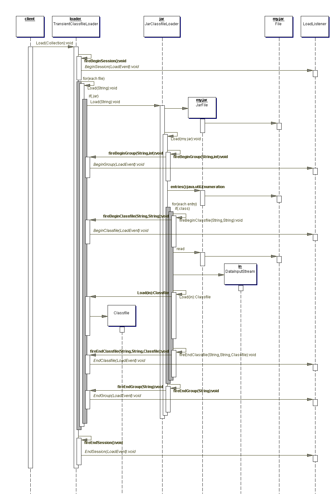
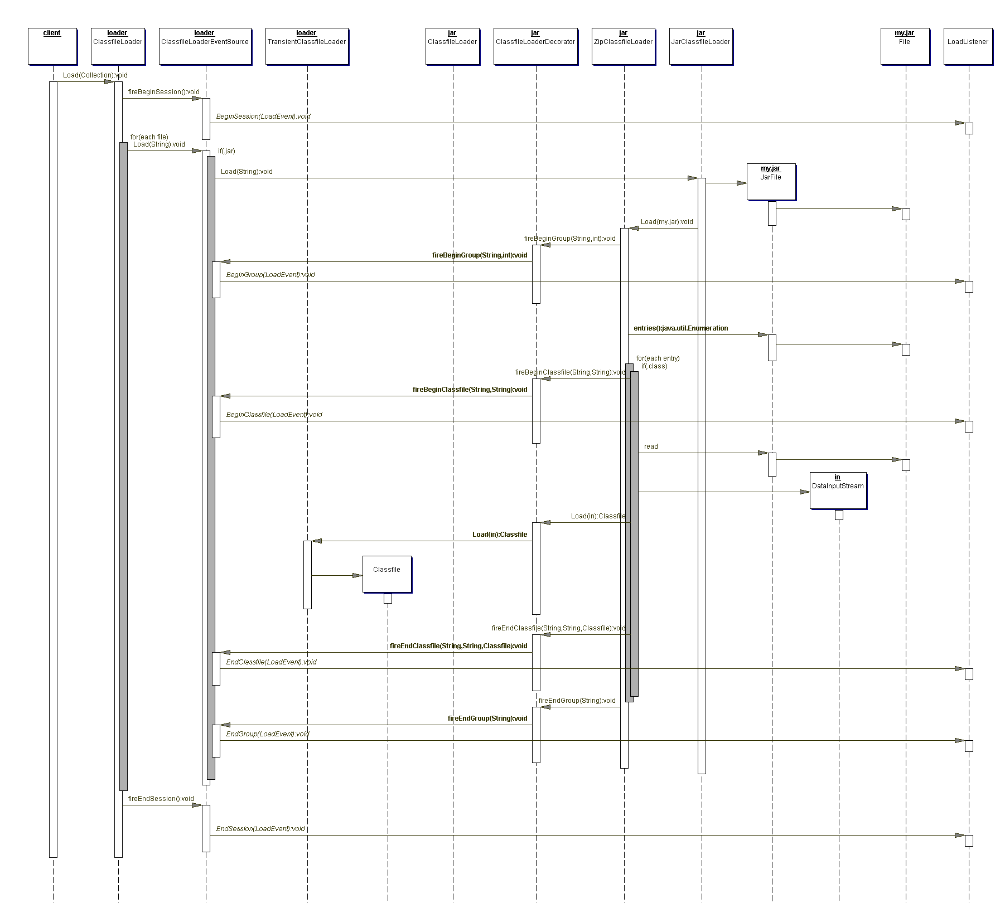

Built a stop condition for the new closure engine and came up with the public interface so I can control how many layers it computes.
Remove all remaining signs of support for object serialization.
This consisted namely of removing code that used
java.io.ObjectInputStream to read files and having
com.jeantessier.dependency.Node not implement
java.io.Serializable anymore.
Release the Dependency Finder tutorial at last. I managed to crop all my screen captures in a consistent fashion. At the last moment, I noticed that a tool tip was on one of the GUI captures. Too bad.
I started thinking about an OO Metrics tutorial too. Setting up a custom configuration is non-trivial and could use some kind of introduction.
Removed all support for serialization of the dependency graph. I
was never able to deserialize the graphs anyway. I was semi-useful for
guesstimating the size of the graph, but DependencyMetrics
is much better for that. Serialiazed objects are not forward-
compatible anyway, so they do not make a good mechanism for
persistence.
I started to compress the sample XML files on the project's home page. They were taking up too much space and making me overrun my quota over there.
Did some screen capture for the tutorial. My previous version had crappy mockups in PowerPoint. I captured the same pictures in both the web application and the GUI, but the images are too big (800x600) to put in the PowerPoint slides that make up the tutorial. If I shrink them down to make them fit, I cannot make out the details that I need to show. So I will need to crop the important parts out, on all images.
Outfitted the closure engine with an inbound selector in unit tests.
Fixed broken links on the Resources page.
Refactored closure selectors to share common code. This will also help me pass an abstract selector to the engine when calculating closures.
Added an InboundSelector to compute "upstream"
closures.
Looked at the bug list and feature request list. It had been a while. There was one bug request regarding broken links on the web site, and two requests for interesting new ways to use JarJarDiff.
It turns out that I had thought of one such way back on August 19, 2003. The idea is to use a dependency graph to list the parts of a third party API you are using. Then feed this list to JarJarDiff to limit the hange report to the subset that you are really using. All the tools are there, it's just a matter of how you use them. I scanned my notes and added them to feature request #900446 until I come up with a formal description.
Figured out how to keep the graphs separate while I compute the transitive closure. The selectors and the engine need to keep two lists of nodes, one for each graph. This allows the closure to only copy the nodes and dependencies that will make up the closure.
But I have another problem. What if class A depends
on class B, and method foo() of
B depends on class C. When I traverse the
graph to compute the closure, is it reasonable to visit features of
classes for additional dependencies? Does A
transitively depend on C in this case?. At runtime, it
would only if foo() is called as a result of interactions
on with A. If that were the case, the graph would have a
path from some feature of A to foo() anyway,
so maybe the transitive closure engine doesn't need to go the extra
distance. I'll think about it some more.
More work on TransitiveClosureEngine. I'm stuck in the
selectors and how they navigate the original graph and copy only what's
needed to the destination graph, all the while keeping track of
individual layers as I build the closure.
Finished the initial step in the new transitive closure algorithm. Now, I need to work on each step's processing, where I incrementally build the closure, one level at a time.
Started working of a NodeSelector to handle the initial
step of the new transitive closure algorithm. I need to take a scope
criteria and traverse the graph, collecting nodes matching the
closure's starting point as I go.
I have a problem with test-driven development. People say you can use the test suite to document how to use a system; but if I'm new to this software, which one of the hundreds of tests should I look at first? I have been toying with the idea of using the dependency graph to categorize the tests and maybe provide a order in which to approach them. I wonder if I could use some clever heuristic estimate the complexity of a given test. I would have to start with a test method and look at dependencies to other classes and methods in the same package. I don't know what the heuristics would look like, yet.
I tried to list OO metrics for test classes by using a group
definition. I noticed that the group counters for the group I had
created were all at zero. It looked strange since the first one is the
number of public classes and it said zero. Statistical measurements
were just fine. After investigating a bit, I realized the counters are
incremented by MetricsGatherer, but only for the package
group of a given class. My custom group never had a chance.
I also noticed one more problem. The statistical measurements at the project level take all groups into account, packages and user-defined. This means that SLOC counts some classes more than once, for example. I don't have a solution at this time.
Following a recommendation from a user, I reworked the documentation for scoping and filtering in Ant tasks.
Adjusted PermissiveDispatcher so it ignores HTML files.
I also gave it its own unit tests.
A number of people have been asking about why Dependency Finder does
not list line numbers where dependencies occur. I added a section in
the User Manual that explains how the line number information in
.class files is so fragmented as to be useless. I put it
under the "Limitations" heading.
Scott Stirling pointed out IBM's SA4J to me. Apparently, IBM acquired SmallWorlds and this is based on the SmallWorlds tool. It would explain why my link to SmallWorlds on the Resource page is broken. Thanks Scott for pluging Dependency Finder in a related article on TheServerSide.COM.
Scott also gave me some feedback on the documentation and submitted some improvements. He's also investigating graphical rendering of graphs on his own. I'll keep you posted.
IBM released a repview of Structural Analysis for Java (SA4J).
I've been reading "UML for Java Programmers" by Robert C. Martin. In one chapter, he talks about dependency management and recommends using tools to automatically track them in code. He goes so far as to recommend JDepend to readers. I wonder if he'd recommend Dependency Finder too. Maybe if I add a package-level dependency cycle detection feature, it would make the tool even more useful. At some point, I will have to start thinking about going beyond the raw data and have the tools do more work when it comes to analyzing design quality factors.
Got started on a TransitiveClosureEngine to handle the
next version of transitive closures. The engine should select a
starting point in the graph and incrementally grow a subgraph from that
initial set of nodes until some termination criteria is met. This
could be that a given node is reached or that a certain number of steps
have been taken.
Added a link to the patch tracker on SourceForge from the project's home page.
Finished passing XML encoding to XML writers.
Worked on having XML writers take an optional encoding identifier. The default is UTF-8 but may not be enough if some Java identifiers contain multibyte characters. I tried UTF-16, but IE and Xerces had trouble with it. So I'll just let the caller pick something they like.
Fixed ClassReader so it processes multiple
.class files correctly. I modified the DTD to allow
multiple <classfile> tags within an all inclusive
<classfiles> tag. I logged it as bug #900938.
I fixed it immediately as patch #900942.
Someone has been having a number of issues. I'll be able to fix some of them, but not all.
First, they analyzed classes with non-ASCII characters in
identifiers. For example, a class name or method name that includes an
"é" character. I was surprised that javac will let
you do such a thing; it turns out this is perfectly legal. Anyway, the
encoding for XML output is UTF-8. XML parsers cannot read the data
correctly because the characters in the stream do not correspond to the
UTF-8 encoding. They would like me to ad an option to specify a custom
encoding.
I looked into this an since Dependency Finder simply write out String objects, maybe I should simply use Java's default encoding instead. The documentation says this should be UTF-16, but when I try it, Xerces complains about byte ordering. And IE complains about the encoding not being supported. More thought needed.
Second, the .class file parser throws a
ClassCastException when it encounters unknown, illegally
constructed attribute_info structures. Apparently, this
was with output from Visual Age for Java. I logged it as bug
#900060.
I fixed it immediately as patch #900062.
Third, they encountered the situation I described on February 03, 2004. I am starting to think that maybe I should do something about it. But what?
Fourth, and last, they tried to run ClassReader on a
whole JAR file. It is designed for use on one file at a time (in
spite of what the documentation says), not on a whole codebase. The
result is an invalid XML document with repeated DOCTYPE and no root
tag. I'll try to fix that tomorrow.
Ran this journal throught a spelling checker.
Fixed a broken link to Poseidon for UML in the user manual.
Someone at work brought TouchGraph to my attention. It's a graph package for complex graphs that lay themselves out. You can collapse nodes and stretch things around. It looks very cool and maybe I could make use of it in Dependency Finder for some kind of rendering of dependency graphs. I looked at the code on SourceForge, but there is no documentation and I don't have the time to investigate further right now. Maybe later...
Last November, I nominated Dependency Finder for the 2003 Jolt Award at Software Development magazine. Today, they announced the finalists. I'm afraid it didn't make the cut. Not that I had high hopes or anything. It did get a mention in the magazine after all.
Software Development magazine published a piece on open source software in which they mention Dependency Finder. It is listed right alongside heavy hitters like LAMP (Linux, Apache, MySQL, PHP), Perl, and JUnit. My name is listed with the likes of Richard Stallman, Larry Wall, Linus Torvalds, Yukihiro Matsumoto, Kent Beck, ...
... eh! ... wait a minute! ...
... all these guys are übergeeks! ...
They've put me in with a bunch of geeks! Args!!!
:-)
Or more precisely: :-D
Someone came up with some weird behavior in Dependency Finder and asked me for an explanation. It turns out to be caused by some interesting things done by the Java compiler. I touched upon it back on January 07, 2004, but I'll elaborate further here.
First, suppose you have the following classes A and
B:
class B {
void b() {}
}
class A extends B {
void a() {
b();
}
}
|

|
Now, imagine for a second that we have the following class
C:
class C {
A a = new A();
void foo() {
a.b();
}
}
|

|
The compiler resolves the line "a.b()" as a call to
method b() on object a of type
A. The JDK 1.3 compiler will see that method
b() is actually defined in superclass B of
class A and will generate bytecode to call
"method b() in class definition B, or one
of its superclasses".
This is fine and dandy as long as nobody overrides b()
in subclasses of B, like A for instance.
Imagine that someone overrides b() in A but
does not recompile C, maybe because this client code was
developed by someone else and the person making the change is unaware
of its existence. Now C will go on calling "method
b() in class definition B", even though
the instance a is of type A and now has a new
definition for its method b(). The compiler said "call
the method defined in B" and that's what the VM will do.
So the good people at Sun changed the compiler in JDK 1.4 to use the
type of the reference instead of where it thinks the method is located.
The VM will walk the inheritance tree at runtime to find the method.
So in the JDK 1.4-compiled version of C even if class
A does not override the method b(), the
bytecode essentially says to call "method b() in class
definition A, or one of its superclasses". Now, even
if we modify A without recompiling C, the
method will resolve correctly.
Let's take a closer look back at class A's method
a(). In reality, it is calling method b()
on the implicit this variable, which is of type
A. So if you compile A with JDK 1.3, it will
try to call method b() in class B. If you
compile it with JDK 1.4, it will try to call method b()
in class A.

Dependency Finder gets its information from the bytecode in the
compiled Java class. It provides you with an exact rendition of what
the compiler did. In the case of the code above, compiled with JDK
1.4, it will list a dependency
A.a() --> A.b(), even though there may not be
any method b() in class A.
Now you may ask "Can't Dependency Finder figure it out and assign
the dependency to method b() in class B?"
The answer is no, it can't. For starters many dependencies go to
classes that the tool will never see such as classes and features in
external libraries that may not get analyzed, such as
rt.jar. Then, there is the issue of starting to make
assumptions. I've resisted the temptation to make any assumptions so
far. I would rather have to tools present an unmodified view of
reality and not run the risk of misleading users with possibly invalid
assumptions. Even if this means that results look strange from time to
time.
I also had someone else ask me about a launching script for JarJarDiff on AS/400. I have never even seen as AS/400 system, so all I could do was to point them to the current Windows and Unix scripts, and what it is that the JarJarDiff tool classes do, in the hope that they are able to fix it for their system.
Looking at the release plan, I think I'm a little dispersed right now. I need to focus and get things rolling again. The holiday break really threw me off and left me with a couple of unfinished tasks. I'm going to complete the documentation and fix the dependency closure bugs and ship the net release ASAP.
Turns out the discussion on praprog was aimed at code analyzers that are part of the language compilers and how they traverse parse trees to determine the type of expressions in loosely typed languages. It was not directly related to the work done by Dependency Finder, but there were still some interesting ideas. Like Tarjan's algorithm for finding minimum spanning trees using depth-first search. It was a good exercise, even if the knowledge will not be immediately useful.
Dependency Finder is three years old!
I have been thinking some more about tracking inter-JAR
dependencies. I could come up with some kind of GroupNode
that would be the parent of PackageNode. But this
assumes that packages are wholly contained in one location, which is
not necessarily the case. An alternative would be for groups to be
made of arbitrary sets of classfiles, kind of like the group
functionality in OOMetrics, where classes can be part of
more than one grouping. Some groups represent packages while others
could represent JAR files. Still needs more thought.
The praprog mailing list had a discussion on dependency cycles and some of the theory behind cycle detection and resolution. Looks like I'll need to hit the books to keep myself current. :-)
Started working on a tool to list packages by JAR file in a given codebase. I'm thinking I could turn this into a way to track classes by their location, be it a loose class file or as part of a JAR file. I have had a few requests for tracking inter-JAR dependencies and this could be a step in that direction.
Yesterday, I forgot to refactor the JSPs to use the new
SelectionCriteria instead of the previous
SelectiveTraversalStrategy directly. Of course, the Ant
task for compiling JSPs using Jasper has changed between Tomcat 4.1.27
and Tomcat 5.0.16, so I had to spend a fair amount of time getting my
custom Ant build script up to stuff. After that, upgrading the JSPs
was pretty easy.
There was a thread on the praprog mailing list about code inspection tools. At first, I didn't want to mention Dependency Finder because the original message asked for tools to evaluate code style and unused variables/methods. Dependency Finder can't do much about style, and while it can find elements that are not referenced directly, that does not necessarily mean they are not used. They could be interface methods or things called via reflection. But then, someone else brought up JDepend, so I had to say something. Some of the other tools mentioned:
I haven't tried any of them myself, but some of the brochures looked nice.
I'm done with the refactoring. It was a lot of work but went on smoothly. Now, I move on to the next task in fixing the closure logic.
I started revamping the dependency closure computations. First, I
need to extract node selection logic to its own class and refactor
SelectiveTraversalStrategy to use the new
SelectionCriteria to determine both scope and filter.
This is getting to be quite an undertaking, but it will help the new
closure logic figure out starting nodes and stopping conditions.
Tried the web application with Tomcat 5.0. Someone claimed they had trouble deploying Dependency Finder with it. I'm afraid this is going to turn into one of those nasty "It works fine on my machine" as I was unable to reproduce their problem.
Upgraded the following development components:
Ant : 1.5.3-1 -> 1.6.0 Jakarta ORO : 2.0.7 -> 2.0.8
There is a nice new feature in Javadoc that Ant 1.6 now makes
available to me. The -linksource switch to Javadoc links
the documentation to the source code. An HTML-ized version of the
source files is created alongside the javadocs. I also saw something
called either "j2h" or "java2html" a while back that created
hyperlinked version of the source code, complete with syntax
highlighting. I wonder if I could somehow get to two to work together.
The links between documentation and source could definitely be useful,
and the syntax highlighting is quite cool too.
I hesitated to checking the new version of build.xml
that uses the linksource attribute to the
<java> task. This would require that people upgrade
to Ant 1.6 just to compile Dependency Finder. But then again, it is
only if they try to generate the javadocs, so it shouldn't really be a
problem.
Found a reference to Dependency Finder on the OSSwin project page. They had mistakenly listed the licensing scheme as GPL when it is actually BSD, but it has all been fixed now. This project is a nice, comprehensive list of open source software for the Windows platform.
I also found someone who listed Dependency Finder in their resume under a "tools used" heading. I will take it as a testimony to the broad acceptance and wide adoption of Dependency Finder. :-)
Someone asked if I could add the line number where the dependencies occur in the dependency graph. Back on October 31, 2002, I had toyed with the idea of modeling each dependency with their own object. This would allow me to collect a lot more data about each dependency, but at the cost of massive object creation. I'm afraid this would impact performance too much. I'll keep thinking about it some more.
Latest SourceForge tallies show downloads only for old release files:
release 20020127 of "DependencyFinder.zip"release 20020127 of "DependencyFinder.src.zip"release 20020711 of "DependencyFinder.war"
These coincide with the first time these names were used, when I removed the release label from the file names. I suspect that some new logic for tallying downloads at SourceForge looks at filename now instead of what maybe used to be either a combination of release ID and filename or some form of file ID.
Actually, looking at the links on the download page, the links for
the various DependencyFinder.zip files are identical. I
wonder what people are downloading? The most recent file or one from
over 18 months ago? A quick download at least reassured me that they
are indeed sending the most recent file, but that's regardless of which
link I click. I cannot download any of the previous versions; I always
end up with the most recent file.
So I always download the most recent file by a given name, but the download gets tallied with the oldest file by that name. Strange. I hope this is temporary and the SourceForge people fix this soon. Otherwise, I'll have to reinstate the version label in the filenames (which might actually not be a bad idea).
Updated this journal.
Added quotes to the website.
Cleaned up leftover text on the resources page.
Now, I need to go and update all the copyright notices to 2004.
The SourceForge website mentions that project statistics are currently impacted by known issues. They are working on it. They have affected since December 22, 2003.
I fixed my HTML scraper to account for the new HTML on SourceForge's download page. It now seems to work just fine. But the data on SourceForge is stale. The statistics page only go to December 30, 2003. I fear that SourceForge is having problems with its statistics collection again.
Apparently, there were over 50 downloads of release 20020127 during the holidays. I don't see why people would be interested in that old version. Something is definitely fishy with SourceForge's statistics and download tallies.
Rosalyn Lum, of Software Development magazine, sent me an email to enquire about Dependency Finder. It seems it might get mentioned in their upcoming March issue. Yeah!
Researched how inherited methods are represented in compiled code.
Method access is resolved based on the type of the object reference
through which the call is made. In the case of a concrete class
calling its inherited methods, it does so against the this
implicit variable which is typed to the concrete class itself. Hence,
all the dependencies are to the concrete versions of the methods.
Here, JDK 1.3 and JDK 1.4 differ slightly. In JDK 1.3, the compiler would resolve method calls to where the methods are defined in the inheritance hierarchy. In JDK 1.4, the calls are resolved to the lowest point in the inheritance hierarchy. This allows redefinition of the method in subsequent versions of subclasses, where appropriate. With the JDK 1.3 compiled class, it would have to be recompiled to benefit from the new definitions.
Look to February 03, 2004 for an example.
Someone is having trouble deploying the web application in Tomcat 5.0. I will have to research this further.
Someone is asking about classes depending on methods they inherit from interfaces or abstract supeclasses. If a concrete class calls one of its own methods that it inherited from an interface or an abstract superclass, there is no dependency recorded between the concrete class and its ancestor. I'll need to research this a little further.
I have an automated task that scrapes the SourceForge "Files" page
for Dependency Finder and saves the download tallies in a
.csv file. I've been running it for over a year now. I
have a nice graph in Excel showing trends and releases. I was a little
apprehensive about my Windows 98 PC not crashing while I was away on
vacation, so I was relieved to find it still running upon my return.
But unfortunately, SourceForge changed the HTML for the page the day
after I left, with the result that I collected no data for the whole
time I was away. And now, I must rewrite the HTML scraper to account
for the new HTML.
I'm away on vacation, but I still found the time to check in on
messages. Someone has been having difficulties but I think it's just a
corrupted .class file.
They also asked to track database calls. I hope they meant calls on the JDBC API. It is very difficult to track the actual SQL from within Java. You need to setup dynamic proxies to trap all calls to statement objects and resolve parameters and all other kinds of transformations. This is way beyond the capabilities of Dependency Finder, and well nigh impossible with static analysis alone.
Came up with much better screenshots.
Started working on how to break up analysis of large codebases. I am struggling with where to put it, though. Should it go in the Manual or as part of the samples?
False alarm. They reinstalled the latest version of Dependency Finder and it now works just fine. I am extremely relieved to hear this. I was not looking forward to tracking weird flushing bugs.
Created a patch for fixing the long names for IEPM
and OEPF and published it as
patch #860191.
Fixed Ant tasks that are subclasses of GraphTask to
accept multiple graphs. Like <javac> and others,
you can use either the srcfile attribute or a nested
<src> element, or you can even use both. It uses a
path-like structure, but I wanted to use a FileSet
instead. You cannot really provide a directory, you have to specify
XML files. But as I was editing the documentation, I came upon tasks
that are subclasses of FileSet and can have nested
<include> elements. I'll have to look into doing
something similar instead of what I did just now.
I wanted to look at the size of serialized graphs to compare full graphs to class-to-class graphs. The way references are handled in serialized graphs is closer to how it's handled in memory than my own XML format. But I ran into a stack overflow situation when I tried to serialize this one graph. This whole idea of serializing graphs is just getting worse and worse.
Well, it didn't work out. They tried to break down their codebase
but all their DependencyReporter output is either of
size zero or badly truncated.
Back in July, I had problems with truncated files, but back then it
was because java.io.Writer instances were not being closed.
I removed all calls to java.io.Writer.flush() because the
stream is supposed to be automatically flushed when it is closed. It
has worked just well for me since then and I am troubled that they
should be having these kinds of problems.
They gave me a copy of their codebase to try and recreate the problem, but it worked fine for me. I'm down to thinking maybe it's because they're on Linux, for some reason. But that can't be it.
As I was working out their problem, I realized how great it is to
have DependencyReporter to merge graphs together. I can
give it as many graphs as I want and it can combine them all
together. I noticed the Ant task version doesn't do that; it can
only take a single graph at a time. I'll need to fix that.
I fixed measurements IEPM's and OEPF's long name. Now, I'll need to create a patch for this.
That one customer with the large codebase and low memory still has
problems. They had tried OOMetrics without much success.
The dependency-related measurement proved too hard to figure out
right. I really need to do something about them.
So, they need to count dependencies between classes.
One approach is to use the dependency counts from
OOMetrics. The downside is that it uses an
AggregatingClassfileLoader to load all the class
structures before making any measurements. Some measurements attempt
to traverse multiple classes and the tool must make sure they are
present in memory at that time.
Another option is to use DependencyExtractor to extract
a dependency graph first, and then get the information from it.
DependencyExtractor uses a
TransientClassfileLoader and discards each class structure
as soon as it's gotten the dependency information it needs. The memory
requirements are much less.
But for a large codebase, the resulting graph can still be quite
large. If you are really restrained memory-wise, it may still be too
much. My customer was trying to run DependencyExtractor
to create one large graph and then reduce it with c2c.
Since all they needed were class-to-class dependencies, we figured they
could run DependencyExtractor multiple times on subsets of
the codebase, run c2c on the resulting graph subsets, and
finally recombine the now much smaller class-to-class graphs. After
trying this with DependencyFinder.jar, it turned out that
the class-to-class graph reduced complexity by 98% compared to the
equivalent extracted graph. I'm anxious to see if this worked for
them.
Someone has been trying to analyze a large codebase with limited
memory. They're interested in counting class-level dependencies and
have been using DependencyReporter to reduce the graph and
then count inbound and outbound dependencies. I suggested they use
OOMetrics instead. It has a whole group of oddly named
measurements (OEP, IIPM, etc.) that already track dependencies. As I
was reviewing them especially in the context of
MartinConfig.xml, I realized they were kind of cryptic and
I need to document what each one does and how you can combine them to
arrive at the counts you're interested in.
I noticed that measurement IEPM and OEPF had the wrong long name. They said "Extra-Class" when they are actually "Extra-Package".
Got a new laptop. Now I can have something closer to a real development environment.
Upgraded the following development components:
OS : Windows 98 -> Windows XP Home JDK 1.3 : 1.3.1_05 -> 1.3.1_09 JDK 1.4 : 1.4.1 -> 1.4.2_03 Tomcat : 4.1.27-LE-jdk14 -> 5.0.16
With the Windows XP based on Windows NT, I can actually use the startup scripts that ship with Dependency Finder. On Windows 98, I had to use variations that worked around limited memory and an impossibility to create temporary environment variables.
Added help links to the resources page.
Started an embryonic screenshot gallery.
Added a feature to ClassMetrics that counts the
occurrence of each VM instruction in the analyzed codebase. I had to
do some minor refactoring of classes Hex and
Instruction. The feature is actually in the class
com.jeantessier.classreader.MetricsGatherer and used by
the UI classes for the CLI and the matching Ant task.
Steve Kirk sent me his rt.jar file. I tried
ClassList on it with logging turned on to see exactly
where it fails. I also discovered
"javap -c classname" which dumps the instruction
sequence for each method. I compared the sequence from my logs with the
one from javap to see if I'm interpreting the bytecode
correctly.
It turns out the class
com.jeantessier.classreader.Instruction had the wrong
size the instruction "fstore". It listed it as 1 byte when
it is really 2 bytes. This threw off the bytecode reader and eventually
led to some runtime exception that crashed the program. I have fixed it
and published a patch for it as
patch #855085.
I find it had to believe that it took over two years for this bug to
surface. I'm very tempted right now to write a tool that counts the
number of times each instruction is present in a give codebase. With it,
I could see if maybe some other rarely used instruction is also be wrong
in com.jeantessier.classreader.Instruction.
Steve Kirk has been having problems analyzing rt.jar
from JDK 1.4.2_01 on Linux. From the error message he sent me, it
seems the bytecode is screwed up. One instruction tries to look up
entry 47105 in a constant pool that has only 445 entries. It would
appear that the compiler generated bad bytecode. In any other
software, I'd believe that. But in the JDK itself? I'll have him
send me the file so I can investigate this myself.
Someone brought NoUnit
to my attention. From what little I read, they seem to be using a
.class file parsing library from
NetBeans to get a method call
graph. I guess they then use logic similar to dependency closures to
figure out if methods are called directly from unit tests or if
indirectly, how many degrees are they removed from the tests. Since
they only analyze .class files and then use XSL transforms
for rendering the information, they cannot take into account
conditional logic. As far as I can see, the information can only be an
educated guess at best. I think you'd be better off using a code
coverage tool like Clover or jcoverage to run the tests. Maybe NoUnit
can give a quick estimate since you don't need to run the tests, and
that is worth something.
Nominated Dependency Finder for the 2003 Jolt Award at Software Development magazine. When I have a URL for people to use to vote for Dependency Finder, I'll post it here.
Release 1.0.1. Of course, as I was closing down, I noticed that I had forgotten one image file. So the new release is not even 12 hours old and it already has a patch. Bummer.
Fixed bug #804400. It dealt with "start ..." commands
in both DependencyFinder.bat and OOMetrics.bat
batch files. I added a quoted string right after the initial
start so the shell interprets the executable name
correctly under all circumstances.
Ant's latest version of their list of external tools now includes Dependency Finder. That was quick!
Sent a message on Ant's user mailing list to request that they add Dependency Finder to Ant's list of external tools. I'll have to keep an eye on their file to see how long it takes them to include the reference.
Did some code clean up to replace error reporting via system
println() calls with logging via Log4J instead.
I want to revamp the release schedule. I'm going to break it up into smaller chunks so I can have smaller, more frequent releases. I am going to put most of the small, miscellaneous tasks as "unscheduled", that is I will not hold up a release just because of them, but I will work on them as time allows.
Used Ant to compile JSPs for dependency analysis. I'll have an
Ant build.xml soon.
Someone asked me about a tool to do jar-to-jar dependencies. I've been thinking for some time now about a tool to list dependencies between JAR files, but it hasn't gone beyond being just a thought, yet.
I was about to say that if the project is small enough, you can always do the jar-to-jar analysis manually with the help of some package-to-package reports. I was going to show an example using Dependency Finder, but even this small example ends up being quite big. In the end, I don't think this would work on anything beyond a trivial example.
For example, if I run this against Dependency Finder, I get:
% DependencyExtractor -xml -out df.xml DependencyFinder.jar % p2p -scope-includes /^com.jeantessier/ \ -filter-excludes /^java/ \ -filter-excludes /^com.jeantessier/ \ df.xml com.jeantessier.classreader --> org.apache.log4j --> org.apache.oro.text.perl com.jeantessier.commandline com.jeantessier.dependency --> org.apache.log4j --> org.apache.oro.text --> org.apache.oro.text.perl --> org.xml.sax --> org.xml.sax.helpers com.jeantessier.dependencyfinder --> org.apache.log4j com.jeantessier.dependencyfinder.ant --> org.apache.tools.ant --> org.apache.tools.ant.types --> org.xml.sax com.jeantessier.dependencyfinder.cli --> org.apache.log4j com.jeantessier.dependencyfinder.gui --> org.apache.log4j --> org.apache.oro.text.perl --> org.xml.sax com.jeantessier.diff --> org.apache.log4j --> org.apache.oro.text.perl com.jeantessier.metrics --> org.apache.log4j --> org.apache.oro.text --> org.apache.oro.text.perl --> org.xml.sax --> org.xml.sax.helpers com.jeantessier.text --> org.apache.oro.text --> org.apache.oro.text.regex
There are a number of problems:
- There are quite a few packages and a lot of repeated information.
If some JARs are quite obvious, like
ant.jar, jakarta-oro.jar, and log4j.jar, it is not clear where "org.xml.*" would come from. I'm thinking that the JVM would probably get them from itsBOOTCLASSPATH. - It the tool analyzes
A.jar, it will find dependencies on packages outside ofA.jar. It would then be quite difficult, maybe impossible, to find out in which JARs these extra packages are located. The tool would need a mapping of packages to JAR; this mapping would preferably be generated automatically but some other tool. - It is possible to put two classes of a same package in two separate JARs. This means that the tool would have to work at the class level instead of that of packages.
I'm sorry there is no obvious answer to this problem, but I will keep thinking about it. In the meantime, there are some tools on the Internet that track jar-to-jar dependencies. Just google it. :-)
Finished the "about..." box for the GUI. I used Swing and
JOptionPane.showMessageDialog(), the Internal
version was for MDI applications.
Reorganized the release plan. Pushed back documentation and moved unscheduled HTML output forward.
Looked at building and "about..." box for the GUI. I started with
the one in JUnit, but it is based on AWT. I think that I may be able
to cook up something similar using Swing instead. I'll start with
JOptionPane.showInternalMessageDialog() and see where it
leads.
Fixed the progress bar in the GUI. DependencyFinder
and OOMetricsGUI now scan ahead to count files and classes
and use this information to drive a more accurate progress bar.
Svetlin Stanchev brought up the idea of having the web application
produce HTML instead of pre-formatted text. I already have an
unscheduled task for this, so now I must decide whether or not to move
it forward. I could use a dedicated Printer subclass,
like I do for text rendering. This has the disadvantage of
duplicating the logic of rendering a dependency graph to a Java class
and an XSL transformation. But I already did it for the text form, so
there is a precedent ... I'm just not sure it really is a good
thing.
Fixed MaximumCapacityPatternCache. It turns out that
Perl5Util use a second cache internally which is
initialized with the pattern cache's capacity. This additional cache
pre-allocates memory proportionally to the capacity, in my case
proportionally to Integer.MAX_VALUE, or about 2 billions.
I changed my cache to use a hard-coded value of 20. That should be
enough to keep things going.
I added my new cache in a few other Perl5Util instances
where they might run into many regular expressions. I had to create a
new package, com.jeantessier.text for the ORO-related
class.
Added xml-apis.jar and xercesImpl.jar to
the web application's WAR file.
Fixed junit.bat and textjunit.bat to use
xml-apis.jar instead of the former
xmlParserAPIs.jar.
Svetlin Stanchev requested a variation of the web application that
can read in a dependency graph saved as an XML document. This way,
one can build on one machine, including generating the graph, and only
copy the graph to the web server machine instead of copying all the
classes resulting from the compilation. It sounded like a good idea
and so I added load.jsp to do just that. I might have to
redesign the footer a little and the web app's parameters. One
drawback is that in order to read the XML document, the web application
needs an XML parser. This means I need to add Xerces to the web app,
bumping up the WAR file's size considerably.
By configuring Log4J correctly, Svetlin Stanchev took graph extraction from 6 hours down to 10 minutes. I'm happy about that.
I was trying to analyze the main JAR file of Together Control
Center as an example of working with a large piece of software (i.e.,
with a huge number of classes). I didn't get very far because one
of the classes in the JAR appeared corrupted and broke the whole
.class file loading process. I adjusted
ClassfileLoaderEventSource so it can skip single,
malformed classes without aborting everything. It turns out they used
an obfuscator and it added a text file with a .class
extension, fooling Dependency Finder ginto trying to parse it like a
regular .class file with bytecode in it.
I gave a shot at Feature Request 825582,
the one about the pattern cache for Perl5Util. I tried
to build a cache based on a simple HashMap with
"unlimited" capacity, but when I use it in
SelectiveTraversalStrategy, I get a bunch of
OutOfmemoryError even from seemingly unrelated areas of
the code. More later...
Expanded the documentation for dealing with Ant and XSL transforms. Check out the documentation, under the "Ant Tasks" heading.
As I was preparing a reply to the original call for help, I noticed
that whether or not Log4J is configured properly can have a huge impact
on the performance of the tasks. In one test, running
DependencyExtractor on Dependency Finder itself took over
7 minutes with the missing Log4J configuration versus 14 seconds
with the configuration that ships with Dependency Finder. So if you
find that Dependency Finder is a little unresponsive, you might want
to check your Log4J configuration.
The "No more DTM IDs" problem with using Ant's
<xslt> task has surfaced again. I had not given it
any thoughts since last April. The solution is to upgrade Xalan in JDK
1.4.1 or use its java.endorsed.dirs settings. I added
an additional documentation page under "tasks", but I will need to
explain it further and tests workarounds.
Added dependencyfindertasks.properties so defining Ant
tasks is made easier.
Svetlin Stanchev asked me to include a property file for Ant tasks
directly into DependencyFinder.jar, and also asked for
more extended Ant documentation. I have had a task on my desk to
provide more process-related documentation for the Ant tasks and
provide examples of how to use them together to provide added value. I
guess it's time I get to it.
Jason Bell, in his JDJ editorial for October 2003, talks about "dependency rot" and how tracking dependencies is critical. I need to make him aware of Dependency Finder! :-)
Fixed progress bar notification in GUI. It had trouble dealing with
the processing of nested groups and was getting off track. In doing
so, I ended up renaming events under DependencyListener
and MetricsListener from StartX() and
StopX() to BeginX() and EndX()
respectively. This way, all events follow the same convention. It
could impact people who developed on top of Dependency Finder, I'll
see if it causes an uproar. They should be able to upgrade by simply
renaming their methods and adding empty implementations for the new
BeginSession() and EndSession() events.
Added copyright dates to the version information. I will need to do something about the code duplication in all the CLI tools.
I want to nominate Dependency Finder for the next Jolt Awards. I couldn't last year because products needed to have had a major release in the year, but now with 1.0 out and 1.0.1 on the way, I'm in the clear.
Someone tried to run a dependency query with an exclusion list that
had over 10,000 regular expressions! On a sizeable codebase, the whole
thing took about 13 hours. They dug around a bit and found that
Perl5Util only caches 20 regular expressions at a time by
default. Their query was taking forever because the ORO engine was
constantly recompiling regular expressions. They entered
Feature Request 825582
at SourceForge.net to request some way to adjust the caching
configuration for Perl5Util.
I added a -version switch to most CLI tools. It
prints version information from the JAR file's manifest and then exits
the tool.
I have a problem with some of the tools that require some mandatory
switches, such as ClassClassDiff and
JarJarDiff. The command-line parser throws an exception
when the mandatory switches are missing, therefore bypassing any
further processing. Right now, I can't do anything about it and the
user must provide the mandatory switches to see the version output. I
see one possible way to handle it. The parser could throw a different
type of exception when mandatory switches are missing. The caller
could catch the exception and still inspect the command-line for the
-version switch. If it is present, the caller could then
print version data instead of usage data.
For the GUI, I want to use an "About ..." box in the menu bar. I will look at the code in JUnit for "inspiration".
Someone claimed that ListDocumentedElements was missing
some elements, "whole classes". They wouldn't give me more details.
How can they expect me to find and fix a potential problem if they
won't even help me recreate it? It'd be one thing if they were some
unrelated party working on proprietary code that they can't show me,
but this was a coworker. We work together on the same code. They just
didn't want to be bothered. So if anybody out there ever sees this
too, where ListDocumentedElements is missing some valid
elements, please let me know. Until now, it has worked just fine for
me, so I'll just assume that my coworker had a bad configuration.
For a while, I had thought about modifying OOMetrics to
output multiple formats in one call. You could call it with
-cvs, -txt, and -xml to generate
all three formats at the same time. And I could do the same thing with
other tools than generate multiple output formats. I finally decided
against. There is very little value in this feature and it would need
broad sweeping changes in the way tools interpret command-line
arguments, such as figuring out the extension for the output filename.
I'll just leave things as they are for now.
Adjusted the verbose output in the CLI and Ant packages. I still have to deal with the progress bar in the GUI.
Possible third-party software that might be useful:
| JCharts | SourceForge | graphical charting package |
| JOpenChart | SourceForge | graphical charting package |
| The Big Faceless Java Graph Library | The Big Faceless Organization | graphical charting package |
| The Big Faceless Java PDF Library | The Big Faceless Organization | library for handling PDF documents |
| Japhar | Japhar.org | JVM |
| Kaffe | Kaffe.org | JVM |
| Jeode | esmertec | JVM |
I haven't checked them yet. More on this later.
Someone wrote to me saying they had problems with
ListUnused. It was showing their constants as unused.
This is because the compiler inlines them in the bytecode if they are
simple enough. I amended the documentation for ListUnused
to explain this in a little more details.
Someone wrote to me saying they had they couldn't figure out the measurements names from their short acronyms in CSV output. I pointed them to the metrics configuration XML document, which lists the long name next to each measurement's short name. I also pointed out that the text and XML outputs list both side by side.
Back when I was preparing version 1.0, I toyed with the idea of having part of the documentation describe each measurement the same way that I have detailed descriptions for each tool in Dependency Finder. I gave up it when I figured that the long names were already fairly indicative and keeping this document in sync with the configuration file would be a lot of work. Maybe I can still add a simple description section in the descriptor...
Moved the GUI's LoadListener implementations to use the
new VerboseListenerBase. Instead of mingling it in the
action class, I moved it out into delegate listener classes. Again,
classes should do one thing only, and do it well. A lesson to
remember.
Now that the GUI, the CLI, and the Ant tasks have access to the full group processing stack, I can work on to how use that information in the progress messages.
Found some interesting leads for free graphical packages in next month's JavaPro magazine. I will need to look more closely into JChart and JOpenChart. There also seems to be a few packages out there for dealing with PDF files. That could also be an interesting avenue for future development.
That same issue of JavaPro also listed Small Worlds as an analysis tool. I will need to write to them that maybe they should have listed Dependency Finder too. :-)
Moved the CLI's and Ant's VerboseListener classes to
use the new VerboseListenerBase. I aligned their output
to match more closely that of extract.jsp.
Interestingly, I had CLI's VerboseListener extend from
java.io.PrintWriter for some reason. Of course, it made
changing in to extend from VerboseListenerBase instead a
rather interesting experience. Let this be a lesson against inheriting
implementation. Incidentally, the other candidates for extending
VerboseListenerBase are in the GUI and already extend
javax.swing.AbstractAction. I am not sure how I'm going
to deal with this one, yet.
I'm rewriting the VerboseListener classes to use the
group tracking behavior I wrote for extract.jsp. I
started by extracting the basis from it and moving it into the
com.jeantessier.dependencyfinder package.
Martin Fowler reorganized the articles on his web page, so I had to adjust the URLs on the resources page. Thanks to Vadim Nasardinov for pointing it out.
Added an extraction timestamp to the JSPs' footer. I was tired of
always having to manually type the URL to extract.jsp
every time I wanted to know if I could rely on the data.
Someone has mentioned that API diff reports still list modified methods even when the class is deprecated. Would it not be better if a class that is now deprecated simply repress all further modifications to it? I say no. Even though the class is now deprecated, it is still part of your supported API until it is completely removed. As such, its modifications should still be listed since users of the library are likely to still be using the class.
Upgraded my testing environment from Tomcat 4.1.24 to 4.1.27.
Looked into using the JSP compiler from Tomcat to automatically compile the web app's JSPs. This way, I can include their dependencies in reports and so forth.
At the same time, I noticed some nice patterns in how to use Ant with external properties files. I might even apply some of them to Dependency Finder.
Came up with an idea for a LoadListenerBase that would
handle the group-related events and maintain a stack of group data.
This way, all VerboseListener classes can share that
behavior, including rendering the group stack consistently. This new
abstract base class would include much of the LoadListener
logic from extract.jsp. I still not sure if I should call
it LoadListenerBase or LoadAdapter.
Created a release plan for version 1.0.1.
Added some links to the resources page.
Semantic Designs, Inc. has a suite of tools to analyze source code, compute metrics, and perform refactorings.
Infotectonica has a tool called Juliet that tracks dependencies and cross-references with a lot of details and a rich query language. It works off of source code and integrates with popular IDEs.
Robert C. Martin came out with a book on software that is gathering a lot of praise. I have taken many ideas from his various papers and presentations. All that material is collected and augmented in "Agile Software Development: Principles, Patterns, and Practices". I just got my copy and I have been going through it slowly. So far. so good. It holds up to expectations.
Added MANIFEST.MF to the list of files for the
PermissiveDispatcher to ignore.
Added tests for both PermissiveDispatcher and
StrictDispatcher to increase code coverage.
Added a more permissive ClassfileLoaderDispatcher that
tried to use ZipClassfileLoader on files of unknown type.
I also made this new, more permissive dispatcher the new default.
Finally figured out how to use @link tags for javadoc
and fixed the one file where I was using it: the package description
for com.jeantessier.classreader.
Also edited the website's introductory page to adjust some of the phrasing.
Fixed backlog in journal entries.
Rewrote the web application so that the copyright notice at the
bottom is actually coming from footer.jsp, which gets
included using <jsp:include>.
For the longest time, I have tried to keep the JSPs as simple and self-contained as possible. I figured they would make handy examples of how to use the various parts of Dependency Finder. But now, they are becoming more and more difficult to manage, with all that duplicated HTML between them, and I am not even touching the duplicated code between all versions of the tools. Anyway, I decided to make my life a little easier and at least break out the duplicated HTML to a shared satellite JSP.
Adjusted all implementations of LoadListener to handle
the new events. It is still a little quirky and I will need to fine
tune them later.
I also renamed some of the attributes in the LoadEvent.
What was the filename is now called the group_name and
what was the element is now called the filename. This
way, the naming reflects more closely the use for these attributes.
I have been considering removing
ClassDependencyCollector and
FeatureDependencyCollector. I am not using them anymore,
and CodeDependencyCollector does a much better job.
Got all unit tests to pass again, except for those four that deal
with closures. Finished the work on ClassfileLoader. Now
I need to adjust all LoadListener as well as come up with
a more permissive ClassfileLoaderDispatcher that is also
configurable. Maybe another XML descriptor?
Finally figured out the flow between ClassfileLoaders. Did most of
the coding for ZipClassfileLoader, which also takes care
of JarClassfileLoader. But I could not get to
DirectoryClassfileLoader, so the unit tests are still
failing.
I have been thinking some more about the flow of control to manage to recursively process ZIP-like files. But I can't quite wrap my head around it right now.
Wrote the tests for the new events. They are all failing, of course.
Came up with a sequence diagram to better understand the
interactions between various ClassfileLoader instances.
This will help me organize the interactions to deal with recursive
processing of ZIP-like files.

I had to explode the ClassfileLoader instances to show
how the behavior is spread across the inheritance hierarchy. This
yields a cleaner diagram, thanks to the fact that each class is
responsible for one and only one thing.

Started coding BeginFile and EndFile
load-time events. I also want to automatically expand ZIP and JAR
files, so I can open compound ZIP-like files, such as WAR and EAR,
directly. This will complicate the flow of events, though.
When extracting from ZIP or JAR files, the progress reports always
fall short of 100%. I realized that this is because the size estimates
include directory entries and non-.class files. The
progress function only counts .class files, and therefore
always comes up short a bit. So I have added two new load-time events
for when the ClassfileLoader start on a file, regardless
of its extension, and when it is done with a file. These events occur
before and after the BeginClassfile and
EndClassfile respectively.
I thought of a new way to use JarJarDiff. So far, I
have talked about how you can use it as a producer of software
libraries to monitor the evolution of the published interface you
expose. But another usage is as a consumer of software libraries,
where you want to know if a new version of the library introduced
changes on the part of the library that you use. I am putting
together detailed instructions on how to use Dependency Finder to
automatically compute which part of the third-party library you are
using and use this information to filter the output of
JarJarDiff. More on this later.
Added a BeanInfo helper class to the
Version class. This way, I can use
<jsp:getProperty> tags in JSPs and not have to call
my accessors getX() and setX(). It works on
Tomcat, but I remember having problems with using BeanInfo
with other application servers in the past. I just hope they have made
progress since.
I found a bug (#789373) with using the XSL stylesheet
PublishedDiffToHTML.xsl from Ant with the
<xslt> task. I will have to investigate, but I
should really rewrite that entire stylesheet so it complies with proper
XSL rules. In the meantime, people can use the
<java> task to run Xalan's XSL processor,
org.apache.xalan.xslt.Process, instead. Just make sure
you set fork="yes" on the task's attributes so that JDK
1.3 VMs pick up the Xalan JAR file. The bug report has a sample Ant
build file that shows how to do it. I will also add it to the
documentation eventually.
Ran JarJarDiff on Xerces and Xalan for the latest
upgrade.
Moved the version stuff to its own class, but since it reads
information from its JAR file's manifest, I cannot find a way to test
it properly. The good news is that with its no-args constructor, I
can use it in JSPs with the <jsp:useBean> tag. Next, I will
outfit the CLI tools with a -version switch. And maybe
I can even get an "About" box for the GUI.
On the downside, I am not too sure where to put this new class. It
is in the new package com.jeantessier.dependencyfinder,
soon to be joined by tools to group the cut and pasted code that ends
up duplicated between the CLI, the GUI, the JSPs, and the Ant tasks.
I might even go as far as creating custom tags for the JSPs, or at
least JavaBeans for the parameters to the query, closure, and
dependency metrics engines.
I created a feature request to address the start scripts for Unix (#787904). Since I don't have an environment setup to develop and tests and package on Unix (yet), I am going to leave these scripts in a patch for now. These scripts don't use the contribution from Jonathan Doughty because I am not done studying it, yet. More on this later.
Figured a way to get at the information in the JAR file's
/META-INF/MANIFEST.MF entry. I now use it in the web
application's JSPs to generate the "Powered by ..." branding with a URL
back to the Dependency Finder website. I will soon refactor it into a
class I can use with -version switches in the CLI and in
an About box in the GUI.
I tried to use
getClass().getResourceAsStream("/META-INF/MANIFEST.MF"),
but the classloader has to defer to its parent first, before it tries
to resolve anything. So I always go the manifest for the JDK itself.
I had to get the resource URL for the class itself first, and parse it
to extract the path to the JAR file instead, and extract its manifest
via the java.util.jar package.
Upgraded the following development components:
Xerces : 2.3.0 -> 2.5.0 Xalan : 2.5 D1 -> 2.5.1
For Xalan, I used the distribution with two JAR files,
xalan.jar and xsltc.jar. I don't need the
material in the second one, so I only ship xalan.jar and
this keeps the size of the distribution down.
Published patch for choosing between a GraphCopier and
a GraphSummarizer when running dependency queries. This
new patch (#784040) replaces two previous ones (#776154 and #776161)
and also fixes a bug in ClassReader where it sent its
Printer to the output stream and generated erroneous XML
data.
Found that StatisticalMeasurement.CollectData() was
both synchronized and had a
synchronized block inside that synchronized on
this. This being redundant, I removed the synchronization
in the method signature and kept the internal block. This way, it runs
a tinny bit faster when the data set has not changed.
SourceForge download counters are working again.
Added a copy-only feature to DependencyReporter (both
on the CLI and the Ant task), DependencyFinder and
advancedquery.jsp. When turned on, the tools always use
GraphCopier to answer queries. This is useful if you
want a class-to-class graph with only inheritance, for instance. I
still have to document this new feature in the manuals.
I added navigation controls to extract.jsp. I was
tired of always editing the URL to go to the query JSP after
extracting a graph. The navigation is the same as on the other JSPs
and I adjusted the title at the top of the page to match that of the
other pages.
Thanks to Jonathan Doughty, who donated a Unix shell script for launching the tools in Dependency Finder. I haven't had the time to look at it yet, but I am curious about how he got around to doing it.
Incidentally, for those who wonder, the main reason I don't have a
Unix version of the scripts is not that I don't know how to write them,
but it is that I don't have a convenient environment to build and to
test them. I was thinking of Bourne shell scripts
(/bin/sh) that could discover
DEPENDENCYFINDER_HOME from their invocation path and figure
out the exact name of the class to invoke from their invocation name.
I have a prototype on the SourceForge shell server that dates back to
January 23, but I cannot build a .tar.gz file with symbolic
links in it on my Windows machine, and I don't want to distribute my
build process either. And working via that dreadful SSH terminal is out
of the question. I need three or four launchers to handle the various
patterns in scripts, and symbolic links to create all the scripts.
Since I cannot create the symbolic links at build-time on my Windows
machine, I might have to write a quick install script that creates all
the symbolic links to each launcher. Running it would become part of
the installation process. Jonathan Doughty took a slightly different
approach, so I look forward to comparing what he did with what I had in
mind. Maybe I can get a patch together while we wait for the next
release...
I had put the wrong patch file in patch #776104. I was able to
recreate the correct file and upload it to SourceForge. Luckily, this
patch was very minor and did not address anything that was broken; it
simply removed redundant calls to
java.io.PrintWriter.flush(). I actually considered
removing the patch altogether and keep the fix for a release. Maybe I
will change my mind again at some point in the future. :-)
Someone found a bug with DependencyReporter. It does
not close its PrintWriter and ends up truncating the
output. I created a patch for it, after verifying that it was the only
tool experiencing this problem.
I also created a patch for the "refresh" button (a.k.a. "reload") on
DependencyFinder.
I also created a patch for the clean up of calls to
flush() from a while ago.
I cleaned up some indentation text. There were still places where
there were four spaces instead of TAB characters.
About the whole optionally using a GraphCopier thing,
I have been thinking that this functionality really belongs to the
advanced controls and I don't need to clutter the simple controls with
it.
Upgraded my testing environment from Clover 1.1.1 to 1.2.
Upgraded my testing environment from Tomcat 4.1.18 to 4.1.24.
Regenerated the code coverage output from Clover. Added the code coverage output from jcoverage.
Toyed with the idea of using a GraphCopier instead
of a GraphSummarizer again. I could prototype JSPs
very quickly that I'll need to work into CVS. I might also apply
the same logic to the CLI and Ant tools.
Fixed the typos in the page on A vs. I graphs.
Added a "reload" button to DependencyFinder. It
re-extracts the last extracted file and clears the result areas in
the GUI.
Found some typos in the page on A vs. I graphs.
The GUI could really benefit from a "reload" button. I keep having to do "New" and then "Extract", but that resets the controls, which can have complex regular expressions in them. All this is too tedious.
Again in the GUI, it would be nice to save the results from dependency queries to an XML document for future reference.
I'm back.
Suppose you place a query against a dependency graph. You only want
to see class-to-class dependencies. If a method is class A calls a
method in class B, but class A does not refer to class B directly,
there is an implicit dependency A --> B but
not an explicit dependency A --> B. 99% of
the time, you want to see the implicit dependency. But on rare
occasions, you don't. Is that justification enough to add a switch to
the user experience to show only explicit dependencies? The code is
already written; it means using a GraphCopier instead of
a GraphSummarizer to perform the query. This is what the
tools do when the graph is maximized anyway. I think I'll sit on this
one a little while longer. I can always use
DependencyExtractor and look at the raw output for the
rare times I don't want to see implicit dependencies.
Someone is having problems with JarJarDiff when their
JAR files are generated by Maven, an Apache tool that looks like a
super-Ant. I'm going on vacation, I cannot look into it right now.
It will have to wait until I return. The problem seems related to
the MANIFEST.MF file, so maybe if they rename the files
to .zip it will bypass that file and work.
Uploaded a patch to fix the extraneous text in the output of
OOMetrics.
Minor correction in the documentation of Ant tasks. When defining
the CLASSPATH for Dependency Finder, always put the
classes directory before the
DependencyFinder.jar file.
My download counters are still at zero, but so are others at SourceForge. I suspect that SourceForge has some kind of bug.
I am going to be on vacation for three weeks, starting this Sunday. I will be back around the 4th of July. I still have a patch to produce before that. I will do a 1.0.1 release upon my return.
I have been struggling with rewriting the JSPs and break them up into headers and footers and navigation pages. Maybe even use tags for the processing and JavaBeans for the request parameters. One argument against doing this is that the JSPs provide examples of how to use the classes in Dependency Finder. I'm not fully decided yet.
This is my luck. The day after the 1.0 Release I find a number of oversights.
First, OOMetrics still tries to print its printer.
This made sense when the printers contained a StringBuffer
and returned the text as part of their toString()
method. But now, they print directly to the output stream and don't
have a toString() method anymore. The output now has
weird strings in odd places, which actually breaks the XML output.
Second, the version information in the JAR file's manifest is the
stripped version: "10" instead of "1.0". I added additional properties
in build.xml to handle CVS vs. version labels.
Third, some classes call flush() on streams before
closing them, and others don't. The documentation says this is
redundant, so I removed all of these calls.
Added "Powered by ..." statement to all the JSPs. This also gave me an occasion to do minor touch ups in the HTML.
I realized that I ran OOMetrics on non-debug code
yesterday when I gathered metrics for the 1.0 release. This means that
SLOC metrics are way off. I'll have to figure a way to recompile that
version and rerun OOMetrics.
1.0!
Renamed some of the XSL stylesheets. The names confused me and I always get confused about which one does what.
DependenciesToX-->DependencyGraphToXDependablesToX-->DependablesToXDependentsToX-->DependentsToXListDependablesToX-->HideOutboundDependenciesToXListDependentsToX-->HideInboundDependenciesToX
I have been thinking about an installer that would generate all the
.bat files and adjust them for Windows 98 vs. Windows NT
and JDK 1.3 vs. JDK 1.4. I cannot use Perl because the machine where
you want to install it might not have Perl installed. I cannot write
the installer as a DOS script either because string substitution would
just be too hard, or the Windows 98 version is quite limiting. But I
could make it as a simple Java program. And this way, it could figure
out the JVM version by itself, and even the OS from system properties.
Unless I have an epiphany, I won't delay the 1.0 release for this;
it'll go in the next release.
More fixes for the quotes in the .bat file. This time,
I am quite confident that they work fine.
Ad hoc testing of the printer modification show that the memory footprint went down by roughly 80% and the processing time remained pretty much the same. This is nice.
I added a new tool to the web app to provide dependency metrics the
same way that the CLI and the GUI do. I also added navigation controls
to move between graphs, closures, and metrics. In the process, I moved
com.jeantessier.dependency.MetricsReport to a
java.io.PrintWriter instead of a
java.lang.StringBuffer, like I did for other printers
yesterday.
Added the web/ directory to the source archive
DependencyFinder.src.zip.
Fixed com.jeantessier.dependency.MetricsReport that did
not interpret inbound and outbound dependencies correctly.
I got a fix for spaces in DEPENDENCYFINDER_HOME. I
have not tested it fully yet, so I need a little more time before I
give it my seal of approval.
Someone mentioned they are running out of memory when extracting
dependencies from large JAR files. This is because the various
printers use internal StringBuffer instances that grow as
the graph gets rendered. I need to take one more look at using
character streams instead, like I mentioned on March 12th.
I went ahead and modified
com.jeantessier.classreader.Printer,
com.jeantessier.dependency.Printer, and
com.jeantessier.metrics.Printer to take a
java.io.PrintWriter instead of their
java.lang.StringBuffer. The modifications were quite
extensive, and com.jeantessier.diff.Printer is still
untouched. It will need more rewriting than I am willing to deal with
at this time.
Someone found a problem with the .bat files. If
DEPENDENCYFINDER_HOME contains any spaces, they don't
work. I need to put quotes around variable uses in each and every
file.
I have been thinking about adding another set of JSPs to the web
app to duplicate the functionality in DependencyMetrics.
I am also thinking of putting in a navigation structure to switch
between the query, closure, and now the metrics tools. I would also
like to pass the parameters around so you can run a query in
query.jsp and click on "metrics" to get the dependency
metrics relating to the subgraph issued from the query: number and type
of nodes, number of dependencies, etc. I might put it in the 1.0
release if it does not take too long to do. Now, all I need to do is
figure out how to render a nice navigation structure.
I have also been toying with the idea of a second web app to provide
the functionality of OOMetrics. I'm still not clear if a
separate web app is really required. The main difference between the
two is that the current extract.jsp does not hold on to
parsed .class files. It discards them as soon as it has
extracted their dependencies. The metrics tools read everything in
first and then go about their business. So the memory footprint is
larger, which might become problematic.
Added some documentation for the
com.jeantessier.commandline package. I had kept the
main() method on CommandLine as a sample,
but it started to bug me. So I replaced it with actual written
documentation, both in Javadoc and in the developer guide.
Memorial Day has come and gone and I was too busy with other things to spend much time with Dependency Finder, let alone do the 1.0 release as I had hoped. In the meantime, the number of daily downloads is still at zero; I must get this release out quickly so the downloads start up again.
Made some minor renaming in the
com.jeantessier.commandline package.
It is interesting that since I announced I might do the 1.0 release imminently, there has been no downloads of Dependency Finder. I would like to think that the world is standing still, waiting for this 1.0 release. :-)
Worked on the design for the new closure calculator. It will be a little more structured and keep track of each layer as the closure is expanded. This way, I should be able to print actual paths instead of just dumping the graph and let users figure it out. I will also be able to use this calculator in finding the shortest path between two groups of elements (packages, classes, and/or features).
I haven't heard anything about the ongoing beta trial, except for the nasty problem with the ZIP file. I'm thinking of closing the beta and release 1.0 over the upcoming Memorial Day weekend (this weekend). I'll see.
I have been looking at the output from Clover. It includes a few metrics, such as:
- Number of classes
- Number of methods
- Lines of code (LOC)
- Non-comment lines of code (NCLOC)
It is interesting to compare them to the metrics from
OOMetrics. First, the number of classes are the same.
But this is where the similarities end.
Second, Clover counts the number of methods explicitly defined in
the source code. Dependency Finder counts all methods in the compiled
.class file, which includes default constructors added
by the compiler and synthetic methods. So the Dependency
Finder count ends up being slightly higher than Clover's count.
Third, Clover's LOC counts all lines in a file, indiscriminate of
whether the line is code, a comment, or even empty. Its NCLOC count
limits itself to lines that actually contain code, but it includes
lines with non-executable code, such as a single closing curly brace
(i.e., '}'). Dependency Finder's SLOC uses information
from the compiler, when it is run with the -g switch, to
count the number of lines with really executable code. It then adds a
few more lines to account for class, field, and method declarations.
It overshoots a little because it even counts implicit constructors and
synthetic elements, but it stays in the ballpark.
| Metrics | Clover | OOMetrics | delta | |||
|---|---|---|---|---|---|---|
| Number of packages | 12 | 12 | ||||
| Number of classes | 275 | 275 | ||||
| Number of methods | 2,642 | 3,609 | +967 | +37% | ||
| Lines of code | 26,544 | (NCLOC) | 24,694 | (SLOC) | -1,850 | -7% |
| 42,939 | (LOC) | |||||
Overall, it is just curious that Dependency Finder comes up with more methods, but less overall lines of code.
Finally got around to running
Clover
on Dependency Finder. Overall coverage is at 52.2%. About 16 tests
in the com.jeantessier.metrics package failed because the
code instrumentation from Clover messed with the expected metrics. I
have put the preliminary results
here. I can move the tests for
com.jeantessier.commandline package from the
main() methods to proper JUnit tests. That should raise
coverage somewhat. I'll look further into Clover for what else I can
get from it.
I came across someone who was actually trying to extend Dependency
Finder. This person had downloaded the source code, modified the
classes directly, and recompiled Dependency Finder with the
modifications. While this might have seemed like a good idea, it
will create problems later on when I release an upgrade to Dependency
Finder and this person will have to merge their custom changes with the
new version of the files. It would be much better if they had put
their custom code in separate classes, in their own custom packages,
and compiled them against DependencyFinder.jar. When a
new version of Dependency Finder comes along, they can just drop it
in.
Updated the samples to add 1.0 beta data.
I had been having problems with the ZIP files that come out of the
builds. For some reason, I could not see their contents using WinZIP
and could not extract them. Other tools, such as unzip,
jar, and even Emacs did not have any trouble. For some
time, I thought this was a problem between Java-generated ZIP files
and WinZIP 8.1. It turns out that Ant was the culprit. They even had
an open bug report about it. It got fixed in the latest release, but
it is too late for the 1.0 beta release. I hope people can make do
with jar for the duration of the beta. Future releases
will work with WinZIP as expected.
Upgraded the following development components:
Ant : 1.5.2 -> 1.5.3-1
Forgot to clean some of the diagrams on the website. All is better now.
The good people at SourceForge have removed the stale locks and the 1.0 beta is finally here! Go get it!
I was all set and ready to go with the 1.0 beta release and "billfan" strikes again. He keeps locking the CVS repository and keeping me from doing anything in there. This is very frustrating. I tried to contact him, but my emails bounced. Each time this happens, I have to open a ticket with SourceForge admins and wait until the next day for them to get to it and blast his locks.
"billfan", if you're listening, GET OUT OF MY REPOSITORY!!!
Thanks to "billfan", you all have to wait until tomorrow for the beta.
Finished the documentation. I added a section for contributors. For now, I feel very paternal about Dependency Finder and I am not quite ready to give up control. I guess I'm more on the cathedral than the bazaar side of things. For those who don't get it, it just means I can be quite stuck up. :-)
I will be releasing the 1.0 beta shortly. Stay tuned.
Started playing with a code coverage tool. They gave me a free license because Dependency Finder is open source. So far, it looks interesting; it consists of Ant tasks to instrument code and gather measurements. Check it out on the Clover website. I'll publish the coverage report for Dependency Finder when I have one.
It turns out the problem with Ant's <xslt> is well known. It
is a bug with the version of Xalan that ships with JDK 1.4.1. To fix
it, you have to upgrade the JDK's Xalan; the best way of doing this is
with the java.endorsed.dir property. I'll document it
in more details either in a bug or on the help discussion board.
Dependency Finder is starting to show up on Java indexing sites. Just do a search for "depfind" and find out for yourself.
I have been trying to add Dependency Finder tasks to the build
file, but Ant's <xslt> tasks has problems with some of the XSL
transformations. At least DependenciesToHTML generates
and error about "not enough DTMs", whatever that means. I can still
run the transform with the CLI script, so I will have to investigate
some more.
I just need to add a legend to the diagrams for
JarJarDiff and write up the project's policy regarding
code contributions. Then I can release the beta.
Redrew the diagrams for JarJarDiff.
Finished the equivalence table. In the end, I decided to put it in the manual.
Added TOC elements to PublishedDiffToHTML.xsl, so it
looks more like DiffToHTML.xsl.
Took a break for a few days, but now I'm back and bent on getting the beta out. I need to build some kind of equivalence table for features between the CLI, GUI, Ant tasks, and web app. I don't know quite where to put it. One place might be as part of each tool description in the tools docs, but that spreads it a little too much. I might just go with a table in the manual instead.
After this, I should be done. The Beta is near!
Completed Ant task documentation.
Added status messages in the processing of Ant tasks.
Ant task documentation.
When I changed PrettyPrinter to
TextPrinter, I forgot to update the JSPs. This is now
fixed.
Ant task documentation.
Ant task documentation.
Wrote the Ant task for ListDiff. Just a little more
documentation for the Ant tasks and the beta will be ready.
Fixed a typo in the license's text. I went to check it all in, but the same person who locked the CVS repository on February 10, 2003 has locked it again. I logged a bug report with SourceForge.net, but it might be up to 24 hours before they break the stale locks.
I decided not to make an Ant task for ClassReader, but
I will need one for ListDiff to complete the workflow
outlined in the manual. Now I'm going to pay for not separating behavior
properly. ListDiff has all the behavior and a utility
class that is in the com.jeantessier.dependencyfinder.cli
package. How am I going to reuse this from the
com.jeantessier.dependencyfinder.ant package?
Wrote the Ant task for OOMetrics.
Wrote the Ant task for DependencyMetrics.
Wrote the Ant task for DependencyClosure.
Cleaned up some of the documentation.
Finished the Ant task for DependencyExtractor and
also wrote those for ClassMetrics,
DependencyReporter, and JarJarDiff.
I decided to stick with the Ant naming convention and use
destfile for the output attribute.
Introduced a new tool, ClassClassDiff, which compares
two classes, even if they don't have the same name. I found a need
for it when a renamed one class to work on temporarily and wanted
to see later on what differences I had introduced. The class was
too large for me to do this with regular diffs.
Wrote Ant task for DependencyExtractor. It turns out
that using a path-like structure is actually easier than extending
MatchingTask. I hesitate about the name of the
attribute for the output file. The other tools use out
but Ant recommends destfile instead. So do I make it
consistent with other Dependency Finder tools or with other Ant
tasks?
Getting familiar with writing Ant tasks.
Tech docs for the developer guide. Added an additional reference
to the OOMetricsGUI screenshot for after the extract.
Had a bout with the flu.
Jeff Harman asked questions about dependency visitors and such, which prompted me to document that control flow a little more. I'll add the new information to the fledgling developer guide when I get a change and when I can find a decent (free) editor for UML diagrams.
Had some ideas about correlating project size and complexity and estimating each via the current metrics. I might be able to do something about complexity with a combination of intra-class, intra-package, and extra-package dependencies at both the class and method levels.
Gave some more thought to having Printer work off a
java.io.Writer instead of a StringBuffer.
This would lessen the burden on memory by streaming large graphs
straight to file or output stream, but the character conversion might
add processing overhead. The design below separates formatting of the
text by DecoratorPrinter from how that text is actually
saved by FilePrinter and StringPrinter. The
latter behaves like the current Printer so I can compare
both approaches. But beyond that, it makes little sense since I could
just as easily pass a java.io.StringWriter to the
decorator.

This first scenario shows saving to a file. Saving to an output stream would look just the same.

This second scenario saves the graph to an in-memory string, though
I could just as easily do the same with a
java.io.StringWriter.

This design looks like overkill, since FilePrinter and
StringPrinter end up with empty implementations for their
VisitX() methods. In fact, they don't even need to be
related to Visitor at all since they are not accessed
directly by the client code. If I am going to define a new interface
for them, I might as well simply use java.io.Writer.
I will probably just replace the StringBuffer in
Printer with a java.io.Writer and be done
with it.
I'm not too happy with the way the sequence diagrams came out too, but that's the fault of the tool I've been using. And even the class diagram has undesireable artifacts. I have no budget for this project, so I could not use the one I would have really wanted. And the one I ended up using was quicker to use than a plain drawing editor.
I also kept looking at the new Xerces and Xalan. All the unit tests
are passing, but PublishedDiffToHTML prints nothing when
I pass it a validation list. I must figure out if this is due to the
new Xalan or the test data. I tried a couple of code samples, but they
are still too large for me to track exactly what is going on.
I upgraded the libraries anyway, I will figure out the kinks later:
Xerces : 2.2.1 -> 2.3.0 Xalan : 2.4.1 -> 2.5 D1
Created some UML diagrams for com.jeantessier.dependency
and com.jeantessier.metrics packages. As I'm trying
to describe the internals of dependency graphs to Jeff Harman, I
figured they would come in handy.
Still investigating Xerces/Xalan upgrades. Having troubles with
PublishedDiffToHTML; for some reason, it prints out
nothing.
Was approached by Jeff Harman about writing dependency graphs to database. This could be the first contribution to the project that did not originate from me! I'll let you know how it turns out.
Still investigating Xerces/Xalan upgrades.
Looking at upgrade for:
Xerces : 2.2.1 -> 2.3.0 Xalan : 2.4.1 -> 2.5 D1
I need to investigate how this will impact usage with JDK 1.4.
Upgraded the following development components:
Log4J : 1.2.7 -> 1.2.8 Jakarta ORO : 2.0.7-dev-1 -> 2.0.7
Fixed TableHeaderListener so the tooltips in table
header display correctly. It wouldn't change the tooltip when you
moved the cursor between columns within the header. I had to put
the tooltip login in mouseMoved() instead. My current
use of this treats the whole header as one large component.
Then further tweaked the text of the tooltips, adding the range information even to column headers and enhancing the tooltips' descriptive quality.
Refactored the text rendering of StatisticalMeasurement
and centralized it. This may change some more since I am not too
fond of mixing application logic and presentation logic, but I don't
have a better place at this time.
Fixed the named scope of two measurements in the default metrics configuration. There were mistakenly labeled _per group_ when they are in fact _per class_.
Added tooltips to OOMetricsGUI. Column headers show
the measurement's full name, cells show the element's name,
measurement's full name, abbreviation, and value.
Removed the documentation of metrics and measurements. With the new tooltips, it is not all that necessary anymore.
I thought of putting a target in build.xml to
update the codebase from CVS, but I had trouble getting it to work
on Win98 and to authenticate properly, so I just dropped it.
Only the Ant tasks left. I've had some ideas about extracting
the cut & pasted code in the tools and put it in central tool classes.
The Ant tasks would just be another way to invoke those tool classes.
So far, they would be in a new
com.jeantessier.dependencyfinder package.
Finished tools docs.
Removed useless -dispose switch to
OOMetrics.
Tools docs.
Removed -plain and -raw switches
from ClassReader, DependencyExtractor,
and DependencyReporter. Their output was not adding
any new information and looked ugly.
Fixed MetricsTableModel.
DependencyFinder uses it to render dependency
distributions in a JTable. A small glitch was making
it miss the last row of data. I also renamed
com.jeantessier.dependency.MetricsGatherer.ChartSize()
to
com.jeantessier.dependency.MetricsGatherer.ChartMaximum().
Normalized naming of human-readable text printers from
PrettyPrinter to TextPrinter. In
com.jeantessier.dependency, I had to merge the two
classes. I also got rid of
com.jeantessier.dependency.UglyPrinter. As a
result, I could get rid of -plain and -raw
command-line switches and simplify the output of
ClassReader, DependencyExtractor, and
DependencyReporter.
Tools docs.
Tools docs.
Figured out how to get Ant's <cvsTagDiff>
task work from "now" instead of "last midnight". It turns out
that adding the time to the date screws up how Ant generates
the resulting CVS command. There is an open bug report with
Apache, so maybe they'll fix it in the future. While we are
waiting, I had to add the quotes in the tag's attribute myself.
I'm thinking of getting rid of the -plain switch
to some of the CLI tools. It is useless. I should be able to
get rid of com.jeantessier.dependency.TextPrinter
by the same token. We'll see about this last one.
Tools docs.
Added an HTML index page to the documentation directory.
Got rid of the -trace command-line switch. If
you want that level of details, edit log4j.properties.
Reworked the -verbose command-line switch. It
prints progress as files are read and data is created, kind of like
the status bar in the Swing applications. The tools use the new
VerboseListener to trap events and print them to the
specified output stream or file. This has helped simplify the
code around main() in the tool classes.
Considered optimizing event sources so they don't do anything
if there are no registered listeners. With the new mechanism
for -verbose, there is always at least one listener,
this optimization is therefore useless, so I dropped it. For it
to make sense, I would have had to complexify the life cycle of
VerboseListener too much.
Added IntelliJ IDEA and Xrefactory to the resources page.
Tools docs.
Rewrote the intro page for the website. I thought it needed some words of encouragement to prospective users as to why they should use Dependency Finder instead of the other available solutions.
Tools docs.
My JavaOne proposals were not picked up. :-(
After I launch the beta, I'll work on some articles.
Tools docs.
Tools docs.
SourceForge broke the locks on the CVS repository and I was able to check in the minor improvements to the JSPs.
Used onMouseOver and onMouseOut
JavaScript event handlers in the JSPs instead of onFocus
and onBlur respectively. This way, the hints appear
in the status area as the mouse goes over each field and the
user does not have to click into them, or use TAB
to move between them and see the hints.
Fixed the tables in the JSP so they show up correctly in
either Mozilla or IE. Lucky I recently learned about
<tbody> and <colgroup>
tags.
Someone locked the CVS repository for the project. I tried to contact them through SourceForge, but the email bounced. I opened a trouble ticket with SourceForge in the hope they can blast the lock themselves.
Added tasks in build.xml to convert the text files
that make up the documentation to HTML. I also added by conversion
perl script, bin/txt2html.pl. It is finally under
source control. I had to adjust the dist target so it
does not include it in the distribution.
I realized that someone made a feature request on the SourceForge
project page. This is the first time in over a year that Dependency
Finder has been open to the public. The request is for Ant task
equivalents to the CLI tools. This should be easy enough. All the
XSL transforms can already be done with Ant's <xslt>
core task. For the other tools, you could use Ant's
<java> task and pass in the equivalent parameters.
But I think I will go one step further and actually create a new
package with classes that extend
org.apache.tools.ant.Task. I will add sample usage in
the Manual. Thanks to Andy Laun for a great proposal.
Tweaked the website.
The tables for the controls in the JSP do not come out correctly in Mozilla. The frames are missing. I will have to rewrite them so that they show up correctly in either Mozilla or IE.
Finished the User Manual.
Updated the example for LinkMinimizer and
LinkMaximizer and merged it with the User Manual.
I also had a idea to use a Writer in the various
Printer classes. This would ease the resource needs
of various command-line operations since the tools would not need
to hold all the output in memory. Anyway, I'm just thinking about
it at this time.
Added an icon to DependencyFinder and OOMetricsGUI.
Quick comparison of minimized vs. raw vs. maximized graphs.
Tech docs.
Fixed table colors for OOMetricsGUI.
"Refactorings" Happy Hour.
Rewrote part of A vs. I study.
Reorganized the menu for the website.
Added an analysis study of Robert Martin's metrics, as described in Robert C. Martin's Design Principles and Design Patterns article.
Also added output from
<cvsTagDiff> tasks in Ant that list files
that changed between release.
Played with SourceForge resources. Someone mentioned that I might be able to use SourceForge shell server to test Unix launch scripts. The shell server does not have compilers and connecting through SSH is tedious, so I will not do this on an extended basis. But I did setup the website as a checkout from CVS. Now I need to figure out how to setup the cron job so it updates itself automatically.
I think I've got it...
Yup.
Tech docs.
Tech docs.
Changed initial status message in
MetricsExtractAction and
DependencyExtractAction to account for long
waiting time while DirectoryExplorer scans for
.class files.
I was having problems with SumMeasurement
today. I added trace statements to track down what was going
on and it started going haywire. Took me a while, but I
realized its Compute() method was not thread-safe.
I synchronized its processing and it is now fine. I looked at
the other measurements and NbSubMetricsMeasurement
was in the same situation. I fixed it too.
I noticed that cut & paste of values in
OOMetricsGUI were coming through as calls to
toString(), yielding the default stringification
from java.lang.Object. I added an implementation
of toString() to MeasurementBase so
that measurements print their numerical value by default. It
works well, except for StatisticalMeasurement
which ends up displaying itself five times.
Added standard deviation subvalue to
StatisticalMeasurement.
Added an InRange() method to Metrics
that returns false if any of the measurements is not
in range.
Found a way to separate between visited and non-visited
methods, classes, and groups by keeping separate lists in
MetricsFactory.
Looked at ways to restrict listed metrics to the classes and
methods actually visited, instead of all referenced elements. I
tried to distinguish between getting a metrics and creating it
only as part of a VisitX() method, but that didn't
work since metrics would only start accumulating after their
call to VisitX(). I'll have to try something else.
Tech docs.
Looked into Poseidon for UML, Community Edition, to generate UML diagrams of Dependency Finder for the documentation. It still has a few quirks, but hey, it's free.
Tech docs.
Tech docs. I started a developer's guide.
Tech docs.
Found and fixed bug #667642 about MetricsFactory not
recognizing static initializers of the form "static {}".
Switched log4j.properties to use CHAINSAW instead
of log files.
Found another article on Small Worlds. This time, it was a review in Software Development Magazine.
The more I think of it, the more I was to revamp
-verbose and get rid of -trace
switches. I'll have -verbose behave somewhat like
extract.jsp or the status bar of the GUI tools.
Upgraded my testing environment from Tomcat 4.1.12 to 4.1.18.
Tech docs.
New release!
Updated the copyright notice for the new year.
I now have progress bars on the GUIs!
I am going to do one more release before the beta, either tomorrow (12/31) or the day after (1/1). Like I said before, this will let people out there use the new features and bug fixes without having to wait on the user guide.
Fixed all the broken unit tests for metrics.
Added metrics-processing events so the UI can track
progress in OOMetricsGUI.
For a while, Jakarta ORO had two versions of
Perl5Util.split() that differed in how they
split the empty string "". They seem to have fixed the
discrepancy in their latest version, so I moved my code
to the new version that uses java.util.Collection
instead of java.util.Vector, which is
deprecated.
Finally got to fixing the broken unit tests, for metrics, at least.
It turns out that JDK 1.4 is doing some funny accounting
for line numbers in try ... catch blocks and this fixes some
inaccuracies in my SLOC estimation. These changes in the
generated bytecode will help debuggers step through these
clauses with more meaningful feedback. By removing the
special accounting in MetricsGatherer, the SLOC
count of code compiled with previous versions of the JDK
will be slightly underestimated. But it is a rough estimate
to begin with, so I guess it is safe.
I am going to standardize the tests for JDK 1.4 and the way that it generates bytecode. In the future, I might put special instrumentation in the tests to detect bytecode that has been compiled with previous versions of the JDK, but it is not a priority for now.
Finally got around to checking that the upgrade to Xalan did fix bug 13106. It works, but I must still rewrite the stylesheet to comply with XSLT rules.
Refactored
com.jeantessier.dependencyfinder.gui.DependencyFinder.
Also refactored some of the metrics handling code to simplify processing of multiple measurements.
I have been thinking some more about the progress status and what information would be displayed in a dialog, such as elapsed time and a guesstimate of how much more time will be required.
More refactoring for the ClassfileLoader event
model. I've added a concept of session, basically a call to
Load(Collection). This will allow me to start
measuring how long extraction is taking and maybe even make an
estimate has to how much longer it'll take. In the meantime,
I have "percent completed" measurement in place.
I'm thinking of having one more release before the beta. This would let people out there use the latest features and bug fixes without having to wait for the user guide. One thing that I would like to release quickly is the new, simpler user interface.
Refactored ClassfileLoader and its subclasses.
The decorators are now hidden inside the
ClassfileLoaderEventSource class, so clients of the
package don't have to bother with which decorator to instantiate.
This paves the way to including progress measurements in the
LoadEvent passed in LoadStart() and
LoadElement() events. This way, I can have either
a "percent complete" or a progress bar as things are loading.
I might even be able to have an elapsed time and a predicted
remaining time.
Documented the methods of LoadListener, but I
must revise the description of the various attributes and under
which cases each one has a value.
Refactored CanAddDependency().
Fixed references in slides for the tutorial. I need to think about this before I publish it on the website. I used the slides from a previous presentation, but this would mean that I would have to come up with some new material if my submission to JavaOne is picked up. Then again, I would have to come up with some new stuff anyway!
Worked on tools documentation.
Found a bug with GraphSummarizer. I describe it
fully on SourceForge; it is bug
#649375.
Basically, when adding dependency between nodes from two different
node factories, such as in GraphSummarizer, the logic
that prevents self-dependencies relied on all classes of a package
being present, which may not be the case while summarizing a graph.
I rewrote the validation logic in Node and its subclasses
to use a template method instead. Since it does not rely on list
traversal anymore, it should speed things up a bit (but I have not
tried to measure it).
Relabeled the beta from "0.1 beta" to "1.0 beta 1". It might have a little more appeal, so more people will try the software.
Worked on tools documentation. Got rid of original
Tools.xml, copied the information so far into
Tools.txt. Pretty soon, I will have to put
the Perl script generator under source control too.
Checked in a bunch of changes that were just accumulating on my machine.
Upgraded the following development components:
Xerces : 2.2.0 -> 2.2.1 Xalan : 2.4.0 -> 2.4.1
The upgrade to Xalan should have fixed bug 13106. I'll check it out tomorrow.
Worked on tools documentation.
Finished the generator and generated a template for documenting the tools that make up Dependency Finder. Now, I must fill in the template.
I'm afraid that I must forget about the Jolt Awards this year. No way I can get an official major release out before December 31. But next year, for sure.
Started working on a generator for a template for
documenting the tools that make up Dependency Finder. I am
using a Perl script to scan the bin/ directory
and automatically generate information about each script.
When I am done, the template will use the same kind of
annotation that I have been using for the user guide.
This way, I can use the same translator for both files to
convert them to HTML. At first, I thought of generating
XML and then use XSLT to convert it to HTML, but managing
XML with embedded HTML tags proved too much. This way,
the notation is simpler and the embedded HTML does not get
in the way.
Technical documentation.
Fixed some minor bugs in how I generate the manual.
Submitted a proposal for the Spotlight on Open Source column in Java Developer Journal.
Found an article on dependencies titled Managing Java Source Code Dependencies for SCM in Java Developer Journal, vol. 7, no. 11, November 2002. It deals mainly with compile-time dependencies and keeping track of components under revision control, but still makes a few good points regarding dependencies in general.
Fixed some minor bugs in how I generate the manual.
Technical documentation.
Discovered another free tool that deals with metrics:
JavaNCSS.
It includes two measurements: McCabe's cyclomatic complexity
and its own non-comment source statement. I really need to move
com.jeantessier.metrics off of the Visitor pattern
and let people code and add their own measurements.
I looked up McCabe's cyclomatic complexity and it shouldn't be too hard to implement. It's basically just a matter of counting specific instructions.
Found another, older article by Robert C. Martin about his "distance from the main sequence" dependency metric.
Technical documentation.
I worked out the design of a new TransitiveClosure
that uses breadth-first search through the dependency graph.
It is not based on com.jeantessier.dependency.Visitor
and uses the Strategy pattern to decide how far to go from the
scope, either up to a given path length or unbounded, with
separate strategies for following inbound versus outbound
dependencies.
I also laid out the design for a scope selector to help with computing transitive closures on non-maximized graphs. This will also come in handy for the next item today.
I have also outlined the algorithm for finding the shortest paths between two groups of nodes, using the engine that computes transitive closures. By growing closures from both groups, one following inbound dependencies and the other following outbound dependencies, and growing them until I have a non-empty intersection, I will get a subgraph that contains all the paths from A to B with minimal length. I can use the scope selector described above to select source and sink groups.
I also found out that Software Development magazine is taking nominations for its Jolt Awards. I'm going to submit Dependency Finder. But they don't want betas, so I will have to push up my release schedule. I'll have a very short beta period and a release in December. ;-)
I have been catching up on graph data structures and their
operations by reading my old college textbooks again. I was
pleased to see that my implementation of dependency graphs was
not too far from implementations they discuss in the book. I
was also pleased to see that TransitiveClosure uses
a depth-first search algorithm, but the breadth-first search
algorithm in the book is more in tune with what the class is
trying to do. I will write a breath-first class when I get a
chance.
The book also has an algorithm for finding a path between two vertices (nodes) in a graph. I will modify it to find paths between two groups of vertices.
Before I forget, the books are:
- "Data Structures and Their Algorithms" by Harry R. Lewis and Larry Denenberg
- "Data Structures in Java" by Thomas A. Standish
- "Data Structure Techniques" by Thomas A. Standish
- "Algorithmique: conception et analyse" by Giles Brassard and Paul Bratley
Wrote a new unit test for TransitiveClosure.
Right now, it requires a maximized graph to be useful. I want
to have it accept any graph, like I did for GraphCopier
with GraphSummarizer.
Running the tests reminded me that I still have a bunch of unit tests for metrics to fix, with regard to the fact that I moved to JDK 1.4.
Found two references to Perl regular expressions in Java. I will be able to point people to them in the manual and the JSPs. This will help with teaching people how to use the regular expressions to get them data they want.
org.apache.oro.text.regexin Jakarta OROjava.util.regex.Patternin JDK 1.4
I will also write a more decent samples section in the manual. The current one is rather laughable.
Submitted another session for the next JavaOne conference. This one is about JarJarDiff and API evolution management. I also got someone from work to give first hand experience of how this stuff is used as part of an actual development process.
Submitted a session for the next JavaOne conference. I used the presentation from October 23rd as the basis. I might add sessions for JarJarDiff.
I will use the presentation's slides for the tutorial. I must get back to finishing the manual, too.
Got some new ideas on fixing the serialization of dependency
graphs. I can separate the nodes from the dependencies and put
everything in a Graph-like object. Each dependency
would become its own object, allowing me to record additional
information about each dependency such as its type (dependency,
association, generalization, realization) and weight (how many
times it occurs in the code).
Looked at possible graphical renders for metrics.
Manual.html now has a table of contents and
named anchors for each section title for easier reference.
The web app now has an error page. The next step will be to have invalid regular expressions reported within each JSP instead of shifting context to this special error page.
Write out AccessField values as bit sets.
Got some more ideas regarding layout of dependency graphs.
Found interesting thing that JDK 1.4's javac
does with method calls. The bytecode now points to the actual
type of the reference now, instead of the last class in the
inheritance hierarchy to implement the method.
Cleaned up com.jeantessier.classreader.XMLPrinter
to better print field accesses and method calls.
Added manifest information to the JAR file.
Presentation went well. Two questions:
When will there be a graphical representation? This is a tough one to crack; it will require a lot of work.
Why Perl regular expressions? Because they are quite powerful and the only regular expression syntax that I bothered to learn a long time ago.
Worked on the PowerPoint presentation some more.
Started PowerPoint slides. When I am done, I will use them for the tutorial item on the release plan.
Drafted talk for this Wednesday. 34 pages and counting.
Will present Dependency Finder at work on October 23.
I'm planning to populate the manifest.mf
file in DependencyFinder.jar. I will also
put in code to printout version info, including versions
of all 3rd party JARs.
Added usage hints to controls in web app JSPs. I also changed the look and feel and put it in an external CSS2 stylesheet. It looks great in IE 5.0 but Netscape 4.7 has trouble with the table that encloses controls. The JSP works, it just doesn't look as great. I'll worry about it later.
Added the same usage hints to controls as tool tips in
the Swing version of Dependency Finder and
OOMetrics.
Created a CSS stylesheet for this website.
Upgraded the following development components:
Log4J : 1.2.6 -> 1.2.7
Further simplified the default settings in
DependencyFinder and query.jsp.
The new defaults print the entire package-to-package
dependency graph, as opposed to the entire graph like
it was doing before. This is so that new users, as they
start using the interface, can simply launch a query and
see something useful without using all the memory available
to render an immense graph.
I will expand the manual to include a tutorial with sample queries and their results.
There was a rendering problem for JTable
under JDK 1.3. I try to group rows in bands of three with
alternating background colors. For some reason, under JDK
1.3, the cells in column 0 would not get the right background
sometimes. This problem is gone under JDK 1.4. Since this
is not breaking any functionality (it is just annoying), I
will recommend that you upgrade your JVM if it bothers you.
I'm dropping support for JDK 1.2.2. I upgraded my JDK 1.3 from 1.3.1_01 to 1.3.1_05. I also started playing with JDK 1.4.
This is interesting, now. JDK 1.4 ships with some basic
XML support, including a version of Xerces. But it looks
like it's an older version than the one I'm using, because
it requires me to explicitly specify the system property
org.xml.sax.driver. I need to dig further to
figure out which version they're shipping and how I can
force it to use the latest Xerces that I ship with
Dependency Finder. Maybe some day, in the far future, when
I don't support JDK 1.3 anymore, I can stop shipping Xerces
with Dependency Finder altogether. But for now, I'm stuck.
Maybe I can weasel out of it by requiring users to install JAXP 1.2 from Sun. The documentation claims that JDK 1.4 ships with JAXP 1.1. Maybe JAXP 1.2 uses something close to the latest Xerces; and it also includes Xalan! I will investigate further.
Also, the compiler in JDK 1.4 behaves slightly differently from the one in JDK 1.3. The result is that the unit tests are breaking because the compiled classes don't have the same number of features. I will have to either revert back to JDK 1.3 or update the unit tests. I haven't quite decided yet, but I'm leaning towards the latter.
I also seems that JDK 1.4 has problems with Log4J too. More on this later.
Upgraded the following development components:
Xerces : 2.1.0 -> 2.2.0
I did a quick check to see if I can still compile
Dependency Finder with JDK 1.2.2, but I can't anymore.
I use java.util.Collections.singletonList() in
com.jeantessier.commandline.MultipleValuesSwitch
and a new constructor for
javax.swing.JRadioButtonMenuItem in
com.jeantessier.dependencyfinder.gui.DependencyFinder
that takes an instance of
javax.swing.Action. Given the context in
which these happen, I don't see how I can write around
them in a clean way.
So I'm probably just going to drop support of JDK 1.2.2 and ask people to use Dependency Finder with JDK 1.3 and above.
Everybody at work is asking how to use Dependency Finder. I guess I need to work on usability and the intuitiveness of the user interface.
Also, maybe the default settings should not try to print the whole dependency graph. The two instances my colleague deployed have over 50,000 nodes and the JVM runs out of memory trying to render them. A think a default of package-to-package dependencies might be better.
Here, I need to choose between default settings that make it non-threatening to newbies versus settings that people use most of the time, so the tool is quick to use, without having to flip the same switches all the time.
Maybe I could submit papers for sessions at JavaOne.
A colleague deployed two instances of the Dependency Finder web app for us to use.
Moved article outlines from paper to Word.
I may have found suitable examples on how to rewrite
PublishedDiffToHTML.xsl in Michael Kay's
book on XSLT.
The good folks at Xalan fixed
bug 13106.
They pointed out that I violate an XSLT rule when I reference
validator instances in match clauses of
<xsl:template> tags. It has been working
until now because Xalan is lenient, but there is no guarantee
that it will do so in the future or that the stylesheet will
work with another XSLT translator. I will need to rewrite
the stylesheet to use <xsl:if> tags to do
the validation.
Wrote two outlines for articles or white papers on Dependency Finder and JarJarDiff, respectively.
Adjusted classfile.dtd and
com.jeantessier.classreader.XMLPrinter to make
the <interfaces> tag under
<classfile> optional. This is to make
it consistent with the other "optional" sections for
fields, methods, and attributes.
Adjusted classfile.dtd and
com.jeantessier.classreader.XMLPrinter to make
<fields>, <methods>,
and <attributes> tags optional. This is
to account for backward compatibility and make the resulting
XML documents a little simpler.
Found a deficiency with
com.jeantessier.classreader.XMLPrinter: it
is not printing attributes of class fields. I opened
a bug about it,
bug #615616.
I used the Inherited Behavior design pattern to normalize
the handling of attributes across implementations of the
com.jeantessier.classreader.Visitor interface.
This solved the bug, but I had to change the DTD for
classfiles. I don't know how that will impact validity
of outputs once I change it the web site that the tools
point to by default.
I worked out the problem with
PublishedDiffToHTML.xsl. If I use the full
notation for Xalan extensions instead of the abbreviated
one for Java, it works just fine, even with Xalan 2.4.0.
So I will upgrade back to Xalan 2.4.0. I opened a bug
with the Xalan folks:
Xalan bug 13106.
Found a problem with Xalan. For some reason, it won't
recognize my extension for PublishedDiffToHTML.xsl
for the Validator. It used to work just fine.
I can't find anything in the documentation regarding
changes on to specify extensions. The release notes hint at
improvements regarding detection of extensions, but there are
no specifics.
I have downgraded Xalan from 2.4.0 back to 2.3.1.
I've had an idea for a new web app where people can upload their JAR files and whatnots and get custom graphs for the duration of the session, or something. More on this later. In the meantime, I've put it in my release plan.
I found a tool that a lot of the same features of
DependencyFinder, but with a GUI and can also
handle C++. I read a review in
Java Developers
Journal. The tool is called
Small Worlds and it
sells for around $1,750. The screenshots are really nice.
I need to write to JDJ, maybe get an article out of it. And I need to follow up on Martin Fowler and Bob Martin too.
I put (most of) the website in CVS as a new module.
I also had an idea for a possible layout of classes, by package, for a dependency graph. Classes in a package are laid out in a circle, forming a cluster. The clusters are they laid out in a larger circle. This way, one can zoom in on a cluster to explore dependencies within a package. If you zoom out far enough, inter-package dependencies dominate and packages with lots of dependencies stand out.

Worked on documentation.
Upgraded the following development components:
Ant : 1.5Beta1 -> 1.5 Log4J : 1.2.3 -> 1.2.6 Jakarta ORO : 2.0.6 -> 2.0.7-dev-1 JUnit : 3.8 -> 3.8.1 Xerces : 2.0.1 -> 2.1.0 Xalan : 2.3.1 -> 2.4.0
It turns out that a semantics change in Jakarta ORO is breaking one of the unit tests. I will look into it later.
And I'm also playing with Tomcat 4.1.10.
Compressing by looking at consecutive lines does not
work. I changed the algorithm in ListDiffPrinter
to be a little more thorough. It can still have some
problems with inner classes, but that only result in a
little too much output; nothing is lost. I'll live with
it for now.
Also fixed ListDiff.bat which was missing
a JAR, now that ListDiffPrinter uses Jakarta
ORO.
Fixed the problem with ListDiff. I'll
double check with the person who first complained about
the problem before definitely hanging my hat on this one,
though.
Turns out ListDiff is not as easy to fix
as I first expected. I know I have to be smarter than
just doing a prefix check in ListDiffPrinter,
but how do I distinguish between a package name, a class
name, and a field name? The answer will drive how far the
prefix match has to go.
I have an idea. I will have ListDocumentedElements
mark each entry with a suffix in " [P]",
" [M]", or " [F]". Then, in
ListBasedValidator, I will trim it off. That
will take care of JarJarDiff and the XSL
transformations. Then, in ListDiffPrinter,
I can use this information to do better compression of the
lists.
I've opened a bug on the matter on the SourceForge project page.
Someone found a problem with ListDiff and
how it compresses lists. It turns out that my simple use
of prefixes when performing compression was a little too
simplistic after all. Packages mask subpackages. Classes
and fields with names that are prefix of others mask those
others. This should be easy enough to fix.
Finished simplifying the UI in the Swing application of
DependencyFinder.
Added separators and table of contents to the output of
DiffToHTML.xsl. This helps me combine reports
into one long history file, with individual diffs separated
by <hr> tags. I also added new sample outputs of
JarJarDiff.
Looked into making each implementation of
Measurement compute its own metrics,
instead of having everything crammed in
MetricsGatherer. This is a major
undertaking and will have to wait until after I have
launched the first beta test. I would have to create
over 60 custom Measurement implementations,
one for each current measurement collected by the
gatherer.
Added caching of values to MeasurementBase
subclasses. This is to speed up rendering in
OOMetricsGUI and other reports.
Finished MartinMetrics.xml for the metrics
in Robert C. Martin's
Design Principles and Design Patterns article.
Refactored AccumulatorMeasurement some more.
Yesterday's implementation was to limiting. Still has a
few kinks to work out. I'm also working on
etc/MartinMetrics.xml which has the metrics
configuration to support instability and abstractness
metrics and his A vs. I graph.
Refactored AccumulatorMeasurement so I can
aggregate extra-package dependencies and compute coupling
metrics.
Added filtering to NbSubMetricsMeasurement. I
was misled into thinking I could simply count classes that have
outbound dependencies and classes that have inbound ones, and
that would be enough to compute coupling metrics. But I was
wrong. This modification is pretty useless, I can't think of
a valid use case. But what the heck, it's in there already.
Fixed yesterday's problem with CodeDependencyCollector.
It now treats the static initializer like any other feature.
I also set the static initializer's signature to
static {}. I decided to fix it since the
com.jeantessier.metrics package was already treating
it that way.
Worked on the documentation a bit. I tried to clarify how scoping and filtering work.
I found out that CodeDependencyCollector treats
dependencies coming from a class' static analyzer as if the
dependencies emanated from the class itself. This means that
dependencies from the static initializer to features show up as
class-to-feature dependencies, something I said in the manual
did not exist. Now I must decide if I'm going to amend the
documentation or treat the static initializer like a feature.
And if the latter, how am I going to name it? I'm thinking
maybe package.Class.{} or something similar.
Removed obsolete constructors in tests, now that I've upgraded
JUnit and that junit.framework.TestCase now has a
no argument constructor.
Found some articles (one by Robert C. Martin) and a tool for the Resource section. The article by Mr. Martin gave me the idea of providing a custom metrics configuration with the metrics he describes in the article, using the same abbreviations. I might need more powerful computational measurements to handle the equations.
I've put up some sample outputs so you can see what they looks like.
Upgraded the following development components:
JUnit : 3.7 -> 3.8
Worked on simplifying the UI in the Swing application. So far, it eludes me. But I'm done with the web application version.
In the meantime, I'm producing dependency reports and API difference reports for past versions of Dependency Finder.
67, 18, 4, 1, 1, 1, ...
The flow of downloads has tarried. But that's OK. I'll get another chance when the beta comes out (if I can get to it).
Worked on simplifying the UI in the web application. Both
query.jsp and closure.jsp now have
a simple and an advanced form. The advanced form has all the
options whereas the simple form only takes regular expressions
that apply to all packages, classes, and features. I'm thinking
of relying on external cascading stylesheets, but I have to
check about browser support. I suppose this is not really an
issue anymore, but I'll check anyway.
67 downloads!!!
I posted a message at 10am PDT and by midnight EDT there had been 67 downloads!
I found two other tools that do similar things as Dependency Finder: classdep and reView.
Faced with the declining number of downloads of Dependency Finder recently, I'm going to have to start advertising. I'm going to start by spamming newsgroups... See you in comp.lang.java.* :-)
I've had an idea for a logo. Here's the initial draft.
Added date of last extraction to extract.jsp.
Trying simpler UI with web application JSPs because they are easier to manipulate than the Swing code.
New release! I was hoping to launch a beta, but I'm behind with the documentation. With this release, people can benefit from the bug fixes while I finalize the docs.
I'm still going through the change logs from CVS to publish the list of changes since the last release.
Back from vacation.
Adjusted release plan to close current release and spec out the first beta.
Wrote a Perl script to parse log information from CVS to prepare the change file listing differences since the last release. New release is imminent.
Done with SLOC.
Added indent-text switch to commands that
generate textual output, including XML documents. This
allows users to adjust file size by replacing four spaces
with a single TAB or whatever else they want.
Finished initial SLOC testing. I need to check a few more things dealing with synthetic elements and inner classes.
Fixed the ListDocumentedElements doclet so it
skips static initializers.
Added dtd-prefix switch to commands that
generate XML documents. This allows users to point to local
DTDs when they are disconnected from the Internet. The
user can simply use
"-dtd-prefix %DEPENDENCYFINDER_HOME%\etc". The
default value points back to the Dependency Finder website.
ListDiff can now compress the resulting list.
This means that if, for instance, a class is in a list, it
will remove entries for methods of that class from the list.
The same goes for packages and their classes. Just call it
with the compress switch.
I changed the published list to use with
PublishedDiffToHTML. It makes more sense to use
the old list, since the goal is to notify customers of the
changes that possibly break backwards compatibility.
I'm done with dependency-related metrics. Now, I need to finalize SLOC.
I'm not going to make it. I wanted to finish the first beta release before going on vacation next week, but I'm not done with the coding and there is a lot of documentation to write still. I'll do a date-tagged release with all the code fixes so I can close the bugs and do the beta later, when I've had some time to write good docs and package the whole thing properly. I've updated the release plan accordingly.
Worked on dependency-related metrics. I think I've got it nailed down, but I need to write more tests.
Made progress with SLOC. Methods are pretty good.
Fields are accounted for. I've added one for the class
declaration. I still need to work out try {
lines.
I got feedback regarding ListDiff and
PublisedDiffToHTML.xsl. I need to do more
testing to make sure that they compute differences
correctly.
Worked on dependency-related metrics.
Wrote test cases for dependency-related metrics.
I'm thinking of using it to test
CodeDependencyCollector too, some day.
Changed the default self-disposition of
StatisticalMeasurement to average values. It
turns out that in my attempt yesterday, I had changed the
wrong default value in the measurement's initialization.
You can now expand AccumulatorMeasurement
values when using the -expand switch with the
-txt switch to OOMetrics.
Fixed -verbose and -trace
switches on all executables.
Fixed a bug in SumMeasurement when dealing
with StatisticalMeasurement and empty lines.
Allow group definitions to be defined by multiple regular expressions.
Used SumMeasurement to compute SLOC on classes
as the sum of SLOC on submetrics + 1. I still need to figure
out how to ignore counts for synthetic elements and add
abstract methods and try { lines.
Created classfile.dtd and put it at:
http://depfind.sourceforge.net/dtd/
Added a TableCellRenderer to the
JTable instances in OOMetricsGUI
to draw out-of-bound measurements in red. I also tried
to set the background to create bands of three rows of
alternating colors, but it is not working perfectly yet.
Added a new metrics tool to OOMetricsGUI
to reset the list of measurements.
Measurements in the configuration file can now be made
invisible via an XML attribute on <measurement>
tags.
I tried to change the default self-disposition of
StatisticalMeasurement to average values, but it
behaved strangely by ignoring itself instead. Strange! I
also tried to have separate renderer classes for
StatisticalMeasurement and the other subclasses
of MeasurementBase, but that also didn't quite
work out. More on that later ... maybe.
Added SumMeasurement in preparation for SLOC
and dependency measurements.
Created metrics.dtd and put it at:
http://depfind.sourceforge.net/dtd/
Fixed a mistyped measurement in MetricsConfig.xml.
Fixed MeasurementBase.InRange() to handle
textual thresholds. It assumed the thresholds were instances
of Number, but the XML descriptor provides them
as text which has to be parsed.
Addressed a possible performance issue which
com.jeantessier.metrics.XMLPrinter where using
four spaces for indent was yielding huge XML reports.
I changed OOMetrics to use a tab character
instead. We'll see how it goes. At the same time, I adjusted
XMLPrinter to generate <measurement>
nodes instead of <metric>. It will also ignore
NullMeasurement instances from here on.
Use the system property line.separator
instead of "\n" in metrics reports. This should help with
cross-platform portability.
Rigged MetricsFactory to handle group
definitions properly.
I've been looking at using tool tips in the header of the
result tables in OOMetricsGUI to expand the
measurement names. Each header has an associated
JComponent, but getting to is proving rather
difficult. I'd almost have to provide a custom
implementation of TableColumnModel, but I
only need to override a tiny piece of the behavior. More
on this later.
Finished MetricsConfig.xml and the constants
com.jeantessier.metrics.Metrics. I adjusted
some of the reporting functions in printers and in concrete
implementations of Measurement.
Worked on unit tests for MetricsGatherer.
I'm working out MetricsGatherer to bring it
closer to the old, hard-coded MetricsFactory.
This is going to take a while ...
The optional validation was not enough when working in a disconnected environment. It still tried to load the DTD, even though it was not using it to validate the document. I've used an Apache feature to turn off loading of external DTDs when validation is turned off. It now works fine.
Finished with the whole MetricsConfiguration
mess. All I have left to do is adjust the measurement names
in MetricsGatherer and complete the descriptions
in MetricsConfig.xml
Next, it is time to fix SLOC and dependency metrics. Then I'll simplify the UI, write tons of docs, and the first beta will finally be available by the middle of June.
Famous last words ...
I was looking into Ant and found some interesting
features. I added descriptions to the build script to help
people understand the various targets. I also managed to
use the <ant> task to compile the JarJarDiff
test samples.
I realized that the combination of a validating parser
with remove DTDs might not work when disconnected from
the Web. So I made the validating behavior optional in
com.jeantessier.dependency.NodeLoader and in
the DependencyReporter CLI application.
I upgraded all the scripts to use the new Xerces JAR files configuration.
Upgraded the following development components:
Ant : 1.4.1 -> 1.5Beta1 Log4J : 1.2rc1 -> 1.2.3 Jakarta ORO : 2.0.5 -> 2.0.6
Redesigned the Measurement hierarchy and
got rid of NumericalMeasurement and
NumericalMeasurementBase. Now, all
measurements have a "value" and StatisticalMeasurement
uses a self dispose parameter to determine how to
evaluate itself. The class diagram is now almost trivial.
The implementations of Measurement can
be configured using the init-text tags in
the descriptor.
Class Init-Text AccumulatorMeasurement[SET | LIST]CounterMeasurement[initial value]NbSubMetricsMeasurementnone RatioMeasurementbase measurement name [DISPOSE_x]
divider measurement name [DISPOSE_x]StatisticalMeasurementmonitored measurement name [DISPOSE_x]
[self DISPOSE_x]
I have fixed all the unit tests!
I was not happy with the way that most measurements
inherited from MeasurementBase and implemented
NumericalMeasurement. This led to a lot of
duplicate code and the resulting class diagram was hard
to read. So I created NumericalMeasurementBase
to store the common code and provided some sensible default
method implementations in both abstract classes. Now, there
is no longer any duplicated code and the class diagram is
simple and obvious.
I have fixed all the unit tests except the one for
StatisticalMeasurement. I've got it pretty much
figured out, but there is just a lot of code to change to fix
these.
I stumbled by pure chance on articles by Martin Fowler on coupling and public vs. published interfaces. I am now thinking of writing follow up articles that show how Dependency Finder helps with addressing these issues.
I have a new design for Measurement
implementations. Now I get over 100 compile time errors when
compiling the unit tests. This is going to take forever...
I finally figured out my problem with Xerces and unit tests.
The Xerces and JUnit's class loading behavior do not play well
together. I had to craft an excluded.properties
file so that Xerces files are not reloaded with every test run.
I finished MetricsConfigurationHandler. In the
unit tests, I tried to test Xerces's XML validation feature.
It load the external DTD, alright, but fails to flag documents
that do not follow the DTD. So much for that.
To use the validating parser, I had to put the DTDs on:
http://depfind.sourceforge.net/dtd/
Upgraded the following development components:
Xerces : 2.0.0 -> 2.0.1
I still haven't solved my problems with Xerces.
I am having problem with unit testing Xerces.
XMLReaderFactory complains that the default
XMLReader is not a XMLReader.
More work on MetricsConfiguration.
I switched the XML formats to use an external DTD instead of an internal one, like I've been doing so far. Not that I have an "official" web site, I can store the DTDs there for all to share. When the release is ready, I'll put the DTDs at:
http://depfind.sourceforge.net/dtd/
I have got a design for the configuration of metrics system. I have started writing some unit tests.
Fixed bugs in:
com.jeantessier.classreader.DirectoryClassfileReadercom.jeantessier.classreader.JarClassfileReadercom.jeantessier.classreader.ZipClassfileReader
where they were not closing the files they were opening. This resulted in locked resources under Windows NT that prevented me from recompiling classes after finding out stuff about them.
Upgraded the following development components:
Log4J : 1.2beta3 -> 1.2rc1
I have found a silly bug in com.jeantessier.dependency.TextPrinter
where it was not following the Inherited Behavior pattern in
some of its methods. This was slowing down the printing of
dependency graphs tremendously (by a factor of 60 for analyzing
Dependency Finder itself). It is all fixed now.
I have started defining the DTD and initial document for the metrics configuration. I have yet to read it in or do anything useful with it.
I have changed how Metrics manages
Measurement instances. If the Metrics
instance is not tracking a given measurement, it returns a
NullMeasurement object instead of null.
I just started on the metrics features. After these are done, and I've completed the user's manual, I'll be done with this release!
I need to adjust the MetricsFactory to create
the elementary measurements at each level and then setup the
composite measurements from some configuration. This will set
the stage for using custom configuration files for custom
metrics reports in the next release.
I have added a utility for diff'ing published API lists.
The utility is called ListDiff and has two XSL
stylesheets for writing to HTML and regular text.
I fixed some images in the user manual.
I'm looking at having a Java Web Start version too.
I am done with JarJarDiff (for this release)!
I have fixed DifferencesFactory. I have renamed
some of the stylesheets. I have added even more unit tests.
DiffToExternalHTML-> PublishedDiffToHTMLDiffToDocumentationHTML-> ListDocumentationDiffToHTMLDiffToInheritanceChange-> ListInheritanceDiffToText
I have moved all the difference computation code from the
constructors to the various Differences classes to a
single DifferencesFactory class.
I have figured out how to work around the expression size
limitation in DiffToExternalHTML.xsl. I have added
a full-signature attribute to declaration
nodes in the DTD for differences. This keeps the size of the
expression somewhat lower, but it is still a behemoth.
I am now done with the higher-resolution validation feature.
The XSL stylesheets for JarJarDiff seem to work
fine. I have added one more to only list documentation level
changes. I also need to test DiffToExternal on a
real-life sample. I am still not clear as to which validation
list to use: the one generated from the old code, the one generated
from the new code, or a merge of the two.
I have been looking at the DiffToExternalHTML.xsl
stylesheet, looking for a way to get the additional validation
now that the resolution has gone down to the feature level.
I have noticed that the match expression for
class nodes has exceeded some internal buffer in
Xalan. If a add a few characters, I get an
ArrayIndexOutOfBoundsException from the transformation
engine.
I am almost done with new features to JarJarDiff!
I fixed all the unit tests and the XSL stylesheets. In the
process, I fixed a bug in PackageDifferences and
ClassDifferences when adding decorators.
DiffToExternal may need additional tweaking. I
also need an new XSL stylesheet to extract the documentation
level information from all the other differences.
JarJarDiff is a mess. I have started writing
unit tests in an effort to regain control.
The code is in place, but it does not seem to be working.
First shot at tracking documentation levels using
JarJarDiff.
After looking at the format used by Argo/UML to save UML project files, I'm having renewed interest in XMI to import dependency graph into UML modeling tools. This would allow people to draw the graph visually using their favorite UML tool. Argo/UML also uses PGML to store graphics. This has led to W3C to standardize SVG, which I might be looking into in the future.
I finished the reorganization of the Differences
hierarchy for the Decorator pattern. I have made this change to
ease listing of documentation status changes. Come to think of
it, I might not have needed this change to do the new feature.
I have added some documentation for JarJarDiff
in preparation for the new feature..
I started some unit tests for the Differences
hierarchy.
I reorganized the Differences hierarchy to
make room for a Decorator pattern. I'm reimplementing tracking
of deprecated features to arrange the code. After that, I'll
be better able to take care of documented vs. undocumented
programming elements.
Right now, I've broken something. I don't have the adequate unit tests to tell me what it is that I broke. I guess I've been a bad boy. This will take a little while to fix.
I am rediscovering the com.jeantessier.diff
package in an attempt to incorporate a documented
attribute to programming entities. I have added javadocs
to explain some of the classes and interfaces.
That validation list is still giving me headaches. How can I make that feature fit without breaking the purity of my code so far? :-)
In the meantime, I've added a confirmation screen to
extract.jsp, hoping this will prevent lengthy
extractions from happening by accident.
I have regained control over DiffToExternalHTML.
With finer control over validation, how the validation list
is generated and used becomes more and more important. If we use
javadoc comments, and we want to track when things transition
from valid to invalid or vice versa, we now need a list for the
old version and a list for the new version. How these two lists
are combined and used remains to be determined. Should they be
fed to JarJarDiff and merged into the XML output?
Should they be fed to the XSL stylesheet, making it even more
convoluted? And what about DiffToHTML.xsl? Should
it start to use Java code too?
I streamlined Diff.dtd to remove duplicated
information in the output of JarJarDiff.
I wrote ListBasedValidator and I have
ListVisibleElements, a doclet for listing programming
elements that have been flagged through their javadoc comments.
This way, one can use javadoc tags to flag classes and features
as part of the published API and guide DiffToExternalHTML
to limit the report to those classes and features.
I've started to adjust DiffToExternalHTML, but
that XSL non-trivial.
I refactored PackageValidator to create the
Validator interface. This is in preparation to a
more granular validation that would have a feature-level
resolution.
I've simplified how TransitiveClosure determines
whether or not to follow inbound and outbound dependencies. But
I still have problems with weird interactions when following both
inbound and outbound dependencies at the same time.
I've created closure.jsp, a web application
interface to TransitiveClosure.
I've added the appropriate switches to
DependencyClosure.
I fixed a typo in DiffToExternalHTML.xsl.
I've bounded TransitiveClosure.
I finally have a release plan.
I may have found some more/better icons in another open source software. More on this later.
I got rid of the previous DiffToHTML.xsl and
renamed DiffToInternalHTML.xsl to it. I also added
the product's name to the template and redesigned the title line.
I added it to DiffToExternalHTML.xsl too. I'm
thinking of making that one simply an XML filter and use the new
DiffToHTML.xsl for all rendering. But I will need
to figure out how to efficiently copy XML trees in XSLT.
Upgraded the following development components:
Log4J : 1.2alpha6 -> 1.2beta3 Jakarta ORO : 2.0.4 -> 2.0.5 Xerces : 1.4.3 -> 2.0.0 Xalan : 2.2 D11 -> 2.3.1
I rewrote the Documentation page to the new Resources center. I hope to keep track of articles and competing software there.
I'm going to upgrade Xerces, Xalan, Jakarta ORO.
Fixed bugs with com.jeantessier.classreader.XMLPrinter.
The XML now uses lower-case tag names. I'm still missing a DTD.
I upgraded extract.jsp and query.jsp,
so they are a little more friendly now.
I moved log4j.properties under src/.
I modified the com.jeantessier.classreader package
so that ClassfileLoader can notify listeners as soon
as a .class file is loaded. This way, tools like
DependencyExtractor can use a
TransientClassfileLoader since it does not need the
Classfile instance once the dependencies have been
extracted.
I need a release plan. I've had a number of ideas lately for new features and I need to scope what's doable and what's not, and have some idea of when I can expect the release.
I fixed TransitiveClosure. I also added to it a
feature where it can now follow inbound dependencies in addition
to outbound ones. Maybe this will become handy somehow. I'm
thinking of limiting the depth of the closure exploration, though.
And finally, it now has two modes of operation: one where it only
records the first dependency that led to a Node, and
another where it records all such paths.
I adjusted the code so that Log4J is initialized from
log4.properties located on the CLASSPATH.
I thought about putting the file in DependencyFinder.jar,
but decided against. If someone is familiar with Log4J, they can
edit the configuration file and adjust logging to their liking.
It took a lot of hard work to figure it out. I had to follow all
the steps below, pretty much in that order:
- RTFM
- RTFM
- RTFM :-)
I temporarily removed xerces.jar and xalan.jar
from the web application WAR file. This dramatically reduced its size.
I also added deploy and undeploy targets to
the build.xml file for Tomcat.
I adjusted GraphCopier and GraphSummarizer
to reduce the noise in their scope output. They used to output the
whole package of any node that was in scope. This often produced extra
output that would obscure the answer to the query.
The new GraphCopier maintains a separate NodeFactory
for scoped nodes and filtered nodes. Only nodes in the scope are
created using the scoping NodeFactory. This cuts away
a lot of extraneous information.
This has unfortunately broken TransitiveClosure.
I fixed JarJarDiff. I forgot to adjust it when
I changed ClassfileLoader to add support for
"progress report"-type of information. JarJarDiff
did not call Start() on its ClassfileLoader
instances.
Dependency Finder is one year old!
I put the functionality for exploring dependency graphs into a web application. It is governed by three application context parameters:
-
name - A user-friendly name for the codebase. This allows users to know the subject of the dependency graph without revealing where it is on the server's file system.
-
source - The compiled Java code to be extracted. You can specify multiple locations by separating them with commas.
-
mode - Whether to maximize or minimize the graph, or leave it in raw form.
The application consists of only two JSPs:
-
extract.jsp -
Extracts the dependency graph from the source specified
by
application.getInitParameter("source"). The graph will further be processed based onapplication.getInitParameter("mode"). -
query.jsp - Displays a subset of the dependency graph, according to the user-specified scope and filter.
I may look into better rendering and status out of the JSPs.
I finally found a practical way to parse the input from the GUI to allow users to specify multiple regular expressions.
I have a plan for making a web application version. The
application implicit object can hold on to the
dependency factory and a query JSP can run queries and format
the results. This is going to be cool!
I'm working on the manual. I started to use MS Word for some of the figures. I'll use Poseidon for the UML.
I fixed the minimize and maximize discussion. It had broken links and I had to regenerate the HTML from the source MS Word document.
While I was at it, I fixed the Documentation section too. It had a few obsolete links.
Someone brought JDiff to my attention. I've given it a cursory look and I still believe that my work is so much better. ;-) More on this later. I'll have to create a section on the competition.
It turns out the problem with XSL was my fault. Apparently, I was not supposed to use the string "--" in comments the way I did to format the copyright notice. I'll put the fix in the next release. In the mean time, people can either edit the files themselves or stick to the GUI.
I'm working on fixing -verbose and -trace
switches.
Upgraded the following development components:
Log4J : 1.1.3 -> 1.2alpha6
I thought about upgrading Jakarta ORO, who just came out with version 2.0.5. But the changes are just bug fixes that don't impact me, so I decided against.
I'll also try to fix the dependency metrics for the next release.
I'm making progress with the user manual. I've expanded the TWiki-like notation to include HTML and inlined images. I put the working draft on the project's web site. It'll be part of the distribution for the next release.
I got my first support call today. Someone is having difficulties
with one of the XSL converters. This is all Xalan
stuff, so I'm thinking it might be JVM memory. I instructed
them to set DEPENDENCYFINDER_OPTS and call me
back.
I got started on a user manual. I want to enter the core text quickly, so I wrote a Perl script to replicate the TWiki shorthand. I'll use it to generate the initial version of the text and we'll see later if it's worth while to keep the original shorthand.
Added feature 502554 "Sorting doesn't work on NaN".
I changed com.jeantessier.metrics.MetricsComparator
so that NaN always appears at the bottom of the
list.
I am going to switch to SourceForge's project management tools for keeping track of status and downloads. It provides more information and is easier to maintain than my little manual HTML page. I'm going to merge it with this journal and then merge it.
I moved the code to the BSD-style license.
Emacs behaves strangely when under CVS. I'll need to adjust the code formatting. It is back to indenting with tabs and spaces.
I finally managed to create the CVS repository on SourceForge. I've uploaded a first version of the code, but it still has the LGPL license instead of the BSD-style one.
I also uploaded the release file in SourceForge's FRS. One more thing to learn (and is not trivial).
I looked at BCEL.
It looks too complex for me to bother with right now.
I already have something that works. I'm going to stick with
it for now. I like how my code uses the Visitor
pattern to provide hooks for traversing the structure.
The Jakarta Project
at Apache has
BCEL,
a subproject that does the same thing as
com.jeantessier.classreader and more.
I requested a SourceForge project and had it approved the same day. I got SSH to work, but CVS still eludes me.
I'm going to change the licensing. I'm going to move away from LGPL to a BSD-style license.
I've been considering switching from Log4J to the JDK 1.4 Logging API. I decided against it after reading Ceki Gülcü's comparison of the two. I've played a little bit with the Logging API and it was very difficult to introduce a new format for the logged messages. I believe Log4J is more flexible and easier to use.
This being said, I still need to work out the
-verbose and -trace switches so
that they properly adjust the logging configuration.
I also need to compare the speed of the tools when
they use Log4J as opposed to com.jeantessier.log.
I got rid of the JAVA_BIN and
JAVA_EXE environment variables. I should be
able to use only JAVA_HOME like everybody else.
I switched from com.jeantessier.log to
Log4J. I must now figure out how to send the
information to a log file instead of the console.
I merged back together JT and JarJarDiff
into DependencyFinder.
I renamed com.jeantessier.util.commandline to
com.jeantessier.commandline and
com.jeantessier.util.log to
com.jeantessier.log. The next step is to replace
com.jeantessier.log with Log4J from the Jakarta
project.
I added a filtering function to OOMetricsGUI.
With this feature, I can filter a set of metrics to only show
the rows that interest me, out of a large body of code.
There is a bug with the sorting function. If a column contains NaN values, only the segments between NaN values get sorted. The NaN values don't move and I then have islands of data, each one sorted by itself.
I change the root of the packages from jt to
com.jeantessier. This comes as part of the preparations
to make this software open source.
Upgraded the following development components:
Jean Tessier API : 20011114 -> 20011125
I added the ability to sort the columns in tables from OOMetrics.
I also fixed a minor bug in jt.dependency.GraphSummarizer
where it was not using the right level for scope and filters (class when
it should have been package).
I've put everything under the LGPL.
Upgraded the following development components:
Jean Tessier API : unknown -> 20011114
I got some performance numbers. I don't recall which column is which implementation, but it seems to point to a decrease in performance. :-(
| Corpus | Before (secs) | After (secs) |
|---|---|---|
| JDK 1.3.1_01 | 148.363 | 154.507 |
| EFS 4.0 b29 | 206.717 | 210.042 |
I'll have to redo these tests to make sure.
I removed trace statements from
jt.dependency.VisitorBase to boost performance.
In tests with JT.jar and DependencyFinder.jar,
I couldn't detect any difference. Can you see the difference?
I also got the latest JT library.
I revamped the web page.
OOMetricsGUI is a Swing GUI put on top of
OOMetrics. It resulted in the creation of the
jt.swing package to hold generic classes for
Swing applications.
The next step is to be able to sort on arbitrary columns.
I must also integrate it with DependencyFinder.
I fixed a problem with inner classes. OOMetrics was
counting all inner class entries in the InnerClasses class attribute.
This included references to inner classes in other classes, resulting
in a count that was higher than reality. It now restricts itself to
actual inner classes of the current class, resulting in the correct
count.
I also adjusted how the jt.classreader.Classfile
constructor writes trace entries about its constant pool. This way,
the text of the pool gets generated only if there is a log object to
print it. I'm expecting a 25% improvement in performance as this
involves quite a bit of conversions when printing the entries in the
constant pool.
I also fixed a bug in OOMetrics so that it now uses the
-project-name command line switch instead of
-project to determine the project's name in reports.
For a while now, I have been less than pleased at having to
operate on maximized graphs. I revised jt.dependency.GraphCopier
to make jt.dependency.GraphSummarizer. The latter
explores the graph more fully to compensate for the sparseness of the
graph. This modification will shorten the time it takes to read the graph,
but queries will take longer to process. Usage in the field will tell which
mode works best on real projects, whether it is normal, minimized,
or maximized. I had to retrofit DependencyReporter,
DependencyMetrics, and DependencyFinder and give
them the appropriate switches.
I found a bug in jt.dependency.CodeDependencyCollector
where it does not process catch clauses to include
dependencies on caught exceptions.
In order to fix this bug, I revisited
jt.classreader.VisitorBase to build in default
behavior that explores all parts of the classfile structure.
I also modified DependencyFinder to include
command-line switches -trace and -verbose.
I added switches to OOMetrics to make the parts
of the report conditional. This way, the users can request only
specific parts of the report if they want.
I need modified jt.metrics.ui.OOMetrics so that
it parses all classes before starting the analysis.
I fixed a bug in jt.metrics.MetricsGatherer
that caused a NullPointerException when analyzing
java.lang.Object. It also skewed Depth of Inheritance
metrics.
I also fixed a bug when processing static class initializers. They were getting attached to a no name class in the default package. Parsing the name correctly fixed the problem.
I might have to have two sets of parsed classes, one for analysis and the other for support classes. This is in order to correctly compute the Depth of Inheritance metric.
I need to modify jt.metrics.ui.OOMetrics so that
it parses all classes before starting the analysis. Right now,
it parses and analyzes each parameter on the command-line
separately.
I adjusted the display of ratio metrics in
jt.metrics.PrettyPrinter and reorganized the code
in the subclasses of jt.metrics.Printer, making it
implement jt.metrics.MeasurementVisitor. I used
the occasion to normalize the behavior of the -time
switch to OOMetrics.
I added ratio metrics in jt.metrics.MetricsFactory.
I now use instances of java.text.NumberFormat in
jt.metrics.PrettyPrinter to adjust the display of
numbers.
I played with using Jikes to compile the code
instead of javac, but the difference in compile
time was not worth the extra warnings (4 secs vs. 10 secs).
I now use the default compiler mode in javac,
modern, instead of classic. I hope
this won't break the compatibility with JDK 1.2 VMs.
It's been a while, but I've been preparing an OO metrics module.
Right now, it is only available as a command-line utility named
OOMetrics. It is very unstable and not all metrics
are computed yet. Output is either text, .csv file,
or XML. I will eventually have XSL stylesheets to format the XML
output. I will also eventually incorporate it in
DependencyFinder.
I added PC counter information to the trace information from
jt.classreader.Code_attribute.
Upgraded the following development components:
JDK : 1.3 -> 1.3.1_01 Ant : 1.3 -> 1.4.1 Jakarta ORO : 2.0.1 -> 2.0.4 Xerces : 1.4.1 -> 1.4.3 Xalan : 2.2_D3 -> 2.2_D11
I fixed a bug in jt.dependency.CodeDependencyCollector.
It was not looking at the signature of called methods when looking
for dependencies. I also stopped processing instruction 0xBB (new),
since the call to the constructor always follows shortly after.
I fixed a bug in jt.dependency.PrettyPrinter. It was
not collecting dependencies correctly when they were between
different kinds of nodes (e.g., feature to class).
There was a bug with jt.dependency.LinkMinimizer.
It misses some redundancies. The whole class had to be redone.
I now have a strong test suite for it and for
jt.dependency.LinkMaximizer too.
I added controls for the printer of dependency reports in
DependencyFinder. This way, we can now limit the
results to inbound or outbound dependencies only, and remove
empty nodes from the result.
I adjusted the text output for a nicer printout. I reorganized
the jt.dependency.Printer hierarchy to preserve the old
format and maximize code reuse.
I fixed a scoping problem in jt.dependency.GraphCopier.
It did not follow inbound dependencies and was therefore missing many
dependencies. I suspect that the same goes for
jt.dependency.TransitiveClosure, but I have not had the
time to investigate.
I fixed a scoping problem in the jt.dependency.Visitor
hierarchy. I also added some new unit tests in the process.
I made major changes in the jt.dependency.Visitor
and jt.dependency.TraversalStrategy hierarchies. I
have consolidated the visitors under a single base class and
moved the complex traversal logic into a traversal strategy
implementation.
There is a bug with the new traversal strategy which does not
traverse the graph at all unless
jt.dependency.TraversalStrategy.PackageScope()
is true. Likewise, feature nodes don't get visited unless
jt.dependency.TraversalStrategy.ClassScope()
is also true.
Made jt.dependency.MetricsGatherer inherit from
SubGraphSelector instead of VisitorBase
so that I could apply scoping to metrics queries. I had to
retrofit DependencyFinder and DependencyMetrics
to pass in the scoping parameters.
I wrote GraphCopier. I can now easily make copies
of graphs before maximizing them.
I have unit tests, using JUnit, for GraphCopier.
The status line of DependencyFinder (previously
known as SwingDependencyReporter) was using up too
much CPU time, so I trimmed down the number of messages that get
displayed. I also had OpenFileAction display class
names on the status line as they are being loaded.
I fixed bugs in SwingDependencyReporter.
- The class
XMLFileFilterno longer ignores directories. - I now use the Metal look and feel.
- I made the result area non-editable. You can still cut and paste from it (at least on Windows).
I added SwingDependencyReporter, a Swing-based
GUI for DependencyReporter. It is still a
little buggy, but it works.
I also reorganized the jt.dependency
package to isolate the UI-related stuff in subpackages.
The package hierarchy may still need some tweaking.
I revised all the .bat files to support an
arbitrary number of arguments. On Windows machines, this
can require messing with the CONFIG.SYS file
to increment the amount of memory dedicated to environment
variables.
I added a -f2f switch and matching .bat
files for DependencyReporter to analyze
software at the feature level.
I am rewriting the .bat files to support an
arbitrary number of arguments.
I also added a -time switch to all commands
so we can time their execution.
I upgraded the package jt.classreader so I could
get signatures from all methods references. I also upgraded the
package jt.dependency to track methods by signature,
instead of only by name.
Upgraded Ant (1.0.8 -> 1.3) and Jakarta ORO (1.2 -> 1.2.1).
I need to get JUnit involved!
I thought of adding support in the jt.classreader
package for generating the .class file. This way,
I can easily test the whole package by parsing and then rewriting
a .class file. If the bytes are the same, then no
information was lost during parsing.
Spun off JarJarDiff.
Reorganized the package structure.
When attempting to locate a feature, the code now looks at
implemented interfaces too. ClassDifferences will
use this for all fields and only for methods between classes or
between interfaces.
- A field removed from an interface or from a class will only be showed as removed if it cannot be obtained from a superclass or supported interface.
- A method removed from an interface will only be showed as removed if it cannot be obtained from a supported interface (superinterface).
- A constructor or method removed from a class will only be showed as removed if it cannot be obtained from a superclass. It will not consider a matching method that would be obtained from an interfaces, since this interface would not provide an implementation for that method.
I renamed the packages. I'm still not happy with all the names,
specially the jt.tools package.
I adjusted JarJarDiff so that when it detects a
feature that has been removed, it looks in the superclasses of
the class for a matching signature or proper visibility. This
can happen when refactoring pushes a method up the inheritance
tree. The method is no longer in the class, but it can still
be visible if it was declared public or
protected. The XML node gets a new attribute to
indicate that a removed feature is now inherited. The XSL
stylesheet can then choose to ignore the removed feature, if it
wants to.
I've added a tool called DiffToInheritanceChange
that lists interfaces and classes whose extends
or implements clause have changed.
I need to redo the packaging and add documentation.
I fixed a bug in the package jt.dependencyfinder.classreader
to process unknown or custom attributes in the .class
file, such as those generated by the Microsoft compiler.
I also fixed bugs in DiffToExternalHTML.xsl dealing
with restricting the processing to public or protected features,
as well as correctly detecting changes in visibility from protected
to package or private.
I gave a copy to Mickey Reilly so she can start using
JarJarDiff. I had to add quick installation instructions
in readme.txt.
JarJarDiff is done, along with its stylesheets. If I
have the time, I'll build test cases so we can verify that it really
does trap everything it's supposed to.
The script JarJarDiff.bat takes two codebases (JAR files,
Zip files, or directories) and saves the differences in an XML document.
The script DiffToInternalHTML.bat takes the XML document
generated by JarJarDiff and transforms it completely to HTML.
The script DiffToExternalHTML.bat takes the XML document
generated by JarJarDiff and transforms the public subset of
it to HTML.
I may need to split this website according to the various tools:
DependencyExtractorDependencyReporterDependencyClosureDependencyMetricsClassMetricsJarJarDiff- utilities
I may also need to revise the package names and organization.
Pretty much done.
In DiffToExternalHTML.xsl, I now use an XSLT Extension
in Xalan-Java to limit the report to a subset of packages defined in a
separate file. The XSL stylesheet has a default value for the filename,
and I should be able to pass in a value from the command-line. I can
now trap changes in extends, implements, and
throws clauses, as well as in the return type of methods.
In DiffToExternalHTML.xsl, I can use an XSLT Extension
in Xalan-Java to limit the report to a subset of packages defined in a
separate file.
In DiffToExternalHTML.xsl, I need to filter out
declarations that only remove abstract, final,
and static, instead of filtering in declarations that
add it. This way, I might be able to trap changes in extends,
implements, and throws, as well as return type.
Refactored JarJarDiff and the XSL stylesheets
to generate both reports from the same XML file. JarJarDiff
still supports the -external switch, but not for
long. I am also more strict regarding what goes in the external
(i.e., public) report. Now, all I need to do is be still more
strict on what features are reported, and restrict the report to
a subset of packages.
It turns out we want feature signatures after all.
Refactored JarJarDiff and the
jt.dependencyfinder.diff package. I adjusted the
XSL stylesheet accordingly. Now, all I need to do is be more
strict on what features are reported, and restrict the report
to a subset of packages.
Also, do we want feature signatures or full declarations in lists?
Renamed the JarDiff tool to JarJarDiff,
at a friend's recommendation. I adjusted the output so that it
lists methods by signature instead of name. It actually outputs
XML and has a XSL stylesheet for converting to HTML. I don't have
one for text, yet.
I've added a tool to compute the transitive closure of elements.
It is named DependencyClosure. If creates a sub-graph
of the dependency graph by following outbound dependencies. By
starting on one class, you can find out all the classes that are
used directly or indirectly by that class. It uses the same scoping
and filtering engine as DependencyReporter.
I've added another tool to compute dependency statistics, such
as the number of inbound vs. outbound links. It is named
DependencyMetrics. I also renamed Metrics
to ClassMetrics in the process.
Added the JarDiff tool to compare different
versions of the same codebase, using the
jt.dependencyfinder.classreader
package. This first version is pretty stupid and writes
only text output from main(). It needs to
be refactored to produce XML, and then use XSL stylesheets
to generate text and HTML reports.
I've added many utility methods in the
jt.dependencyfinder.classreader
package to help in interrogating classes.
More bug fixes with parsing .class files.
Fixed the .bat files. Also created the
readme.txt file that explains how to install
the tool. The .bat files still depend on the
JAVA_EXE environment variable. I need to fix
that so that the .bat files try JAVA_HOME
and/or give a nice error message when they cannot find the JVM.
Added Metrics to handle class metrics gathering,
as described on March 5. I have yet to gather metrics about
dependencies.
Fixed some bugs with parsing .class files.
I tweaked CodeDependencyCollector to process
new, anewarray, checkcast,
instanceof, and multianewarray opcodes.
It doesn't seem to add any dependencies that were not already
found by just looking at field access and method call instructions,
but maybe this is just a quirk of my code.
I need to adjust the .bat files so that they
are no longer tied to my environment. I'll create a
DEPENDENCYFINDER_HOME environment variable,
this way people only need to set that variable to start
using the tools. Eventually, I could look at some kind of
InstallShield or InstallAnywhere solution.
I also want to create some additional implementations of the
jt.dependencyfinder.classreader.Visitor
interface to compute software metrics, such as:
- number of packages, classes, methods
- number of classes per package or methods per class
- number of public, static, or synthetic classes or features (i.e., fields and methods)
- ...
I could do the same with additional implementations of the
jt.dependencyfinder.model.Visitor
interface to compute software metrics, such as:
- number of outbound dependencies per package, class, or feature
- number of inbound dependencies per package, class, or feature
- ...
For these last dependency metrics, the tools should be applicable to
the output of both DependencyExtractor and
DependencyReporter, so that scoping can be used without
duplicating the functionality in DependencyReporter.
After running the tools on themselves, I reorganized the package hierarchy and simplified it greatly.
I added XSL stylesheets for converting dependency graphs to text and HTML. Each stylesheet has three version:
- Whole graph
- List only outbound dependencies (show nodes that are dependent on others)
- List only inbound dependencies (show dependable nodes, i.e., depended upon)
I added shorthand options to DependencyReporter.
I also added shorthand .bat files.
I adjusted DependencyExtractor to scan the
bytecode using CodeDependencyCollector instead
of limiting itself to traversing the constant pool and looking
at signatures.
I refactored Collector, making it an interface
with a base implementation (CollectorBase) and
creating an inheritance ladder with Visitor.
I found yet another bug with byte as a signed type.
There may be others still waiting to manifest themselves.
Added a script for doing XSL Transformations. It uses Apache's Xalan. Now all I need are some XSL stylesheets.
DependencyReporter is working fine, except
that the command-line is starting to exceed DOS limits.
I will need to create an XML configuration document if
I want to process complex queries.
I fixed DependencyExtractor so that it can
read from JAR and Zip files.
I found yet another bug caused by things use index 0 in the constant pool to represent special cases. There may be others still waiting to manifest themselves.
Simplified the command-line interfaces to the major
tools (DependencyExtractor and
DependencyReporter).
Fixed Reporter to assume it is operating
on a maximized graph. This simplifies the processing and
minimizes traversals. This might have also solved the
printing problems I was experiencing.
Fixed a bug where a feature could get a dependency on its class or package, and vice versa. The same thing was happening between classes and packages.
Added the CodeIterator class in the
jt.dependencyfinder.classreader
package. This allows me to traverse bytecode and capture
dependencies originating from methods. I have yet to figure
out exactly how to use it. I'm thinking of writing a
new DependencyCollector to do all the
collecting, instead of the current two step class then
feature collection.
Added the Reporter class in the
jt.dependencyfinder.model.Visitor
hierarchy. This allows me to build a Node
graph from the dependency graph which answers queries
such as package-to-package dependencies and the like.
I've adjusted DependencyReporter to make
use of this new class. There are still problems with
displaying scopes of other things than packages, but it
should be easy to solve.
The interfaces to DependencyExtractor and
DependencyReporter need work to make them
easier to use.
I must fix the deserialization bug in the
jt.dependencyfinder.classreader.Classfile
package.
I must also make the whole
jt.dependencyfinder.classreader.Classfile
easier to use for general purposes (i.e., Jeff).
Added the ClassfileLoader hierarchy in the
jt.dependencyfinder.classreader
package. This allows me to read from .class
files from a directory tree, from a JAR file, or from a
Zip files.
Right now, the loaders load and parse everything in the constructors. I need to enhance these classes to do lazy loading and provide a list of the entries they contain. Whether these entries will be file names or class names is not decided yet.
I also need to enhance the classes in the
jt.dependencyfinder.classreader
package to provide better navigation and query mechanisms
in the Classfile-rooted structure. I need to
be able to pull methods and fields by name rather than
iterate through the collections. I need to simple query
methods when looking for tagging attributes such as
Synthetic_attribute or Deprecated_attribute.
Added a SAX parser for reading the dependency XML format, using Xerces from Apache.
Added an embryonic DependencyReporter tool.
I'm thinking of having this tools output some form of XML
and then use XSLT to convert it to whatever I need. I
would most likely use Apache's Xalan for that.
I'm also thinking of another tool that would create
a file hierarchy that mirrors the one from javadoc.
This way, I could embed dependency information in the
automatically generated documentation. Each class comments
could include a hyperlink to a local file with the dependencies
for that class. The same would go for packages.
I also need to figure a way to read .class
from JAR files, in addition to directories.
Renamed the extraction tool from
DependencyFinder to
DependencyExtractor.
Added LinkMinimizer and
LinkMaximizer visitors to control the
size of the dependency graph. LinkMinimizer
removes redundant edges while LinkMaximizer
replicates edges. The minimal graphs gives a more compact
representation, but traversal can be slowed down. The
full graph takes up more space, but its traversal will
be more efficient when computing metrics such as
aggregated package dependencies.
Refactored the
jt.dependencyfinder.model
package to have a Node hierarchy and
Visitor classes. This way, I will be
able to use visitors to implement reporting functions
in Java.
Added DirectoryExplorer and the
jt.dependencyfinder.model
package. The new DependencyFinder
tool either prints the forest of packages
or the burgeoning XML output.
We may have a problem with inlined code. Features
marked as public static final do not
show up.
Regarding the need for compiling in debug mode
(-g switch). This is required in order to
capture dependencies created by the type of local variables
in methods. The compiler verifies the legality of type
assignments and then discards the type information. When
the compiler is called with -g, it keeps the
type information to create the LocalVariableTable
attribute of Code attributes. If the
assignment is legal, then it meets all the dependency
requirements. It either uses the same dependency, or creates
a new one which is more restrictive than the initial
dependency (i.e., it transitively includes the former).
Dependencies are not automatically considered transitive,
but in this case they are. It is therefore acceptable
to ignore the dropped dependency. If someone really
wants to see it, he or she simply has to compile the
code using -g and run the dependency
finder again.
I should consider turning this into an Ant task.
What if I used a ClassLoader instead to
trap class requests as the target class is being
resolved? The good thing about looking at the
.class file only is that I don't need to
have all the dependencies on the CLASSPATH
at the time.
I looked at the classes used by javac
and it appears to be a mess. I'll stick with my things
for now.
I reinstated the Visitor pattern in the
jt.dependencygenerator.classreader
package with a vengeance. It turned out to
be useful in other areas of the .class
file as well. Visitors can now explore the
whole .class file, including fields,
methods, and attributes.
I moved the ClassReader tool from the
jt.dependencygenerator.classreader
package to the jt.dependencygenerator.tools
package.
The extractor now reads the entire .class
file.
It has problems reading from compressed JAR files.
It seems to be OK with uncompressed ones. Maybe I can
use the java.util.jar package to read the
whole byte stream in memory before starting the processing.
Handed a copy of the code to Jeff Chan.
I broke out the package and got rid of the Visitor
pattern in the
jt.dependencygenerator.classreader
package because I had only one simple visitable
object.
The extractor only reads from the constant pool,
which only holds references to methods that are
called and fields that are accessed. Each field
and method entry later in the .class
file maintains its own index to the name and
descriptor (i.e., signature) in the constant pool.
I must parse deeper in the .class
file to extract field and method entries and
get the references I need from there.
I must also make sure that I capture dependences from local variables in methods!
François is looking for a JAR
comparison tool to analyze differences between two
versions of a given JAR file. Once I've tuned the
.class file parser, we could use it to
extract API information from JAR files.
The extractor is half-way done. The current version
is not very good at keeping track of which signatures
are really useful, and I'm not very happy with the
large switch() statements.
Project start.